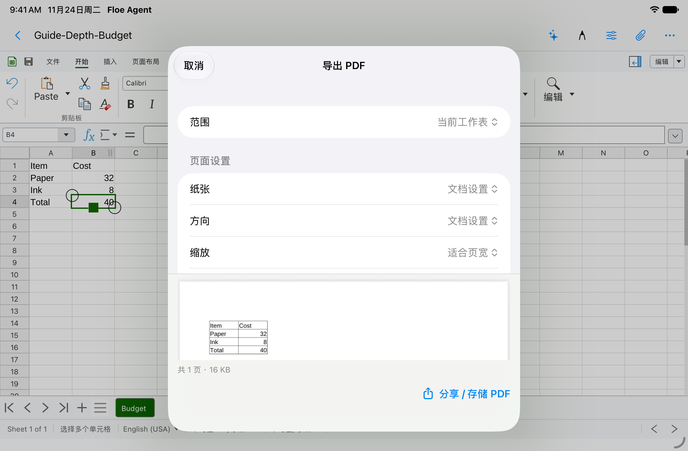
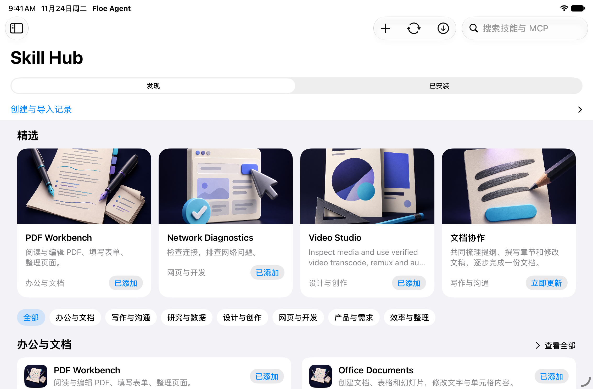

Floe 에이전트 사용자 매뉴얼
개요
이 가이드는 iOS/iPadOS를 다룹니다. 시작하십시오 설치부터 첫 번째 결과까지. App Store, GitHub/Feather 및 TestFlight 버전은 검증 날짜와 함께 추적됩니다. 채널 상태. GitHub IPA는 귀하의 서명이 필요합니다; TestFlight의 가용성은 귀하의 그룹에 따라 달라집니다. 보십시오 작업 공간 가이드 빌드별 기능을 위해
보십시오 공유 가이드 모델 연결, 첫 번째 작업, 저장 및 피드백에 대해 이 매뉴얼은 이 플랫폼의 인터페이스와 기능을 다룹니다.
Floe에서 AI 작업, 노트, 오피스, 드로잉 어시스턴트, 캔버스 및 미디어, 그리고 로컬 및 원격 개발을 활용하는 방법을 배우십시오. iPad용으로 설계되었으며 iPhone에서도 제공됩니다. Floe는 iOS/iPadOS 26 이상이 필요합니다.
이 가이드는 워크플로우를 설명합니다; 빌드별 제한에 대해서는 워크스페이스 가이드와 선택된 릴리스 노트를 사용하십시오. 설치된 버전의 설정을 확인하고 릴리스 및 설치 상태 각 채널에서의 가용성을 위해
시작하기
문서 및 창작 작업
- 7. 노트: 가져오기, 검색 및 필기
- 8. Office: 편집, 주석 달기, 저장 및 다시 열기
- 14. 엔지니어링 도면 및 AI 검토
- 15. 캔버스, 이미지, 오디오 및 비디오
- 16. 음성 입력 및 전사
개발 및 연결
- 9. 로컬 터미널 및 Linux 성능
- 10. Python, 노드, 패키지 및 코드 실행
- 11. Git 및 GitHub 작업
- 12. 원격 호스트, 데스크톱 및 진단
- 13. 브라우저, 웹 미리보기 및 로그인
더 많은 도구 및 도움말
- 도움말 및 가이드
- 17. 기술, MCP, 메일 및 자동화
- 18. 배경 작업, PiP, 알림 및 데이터
- 19. 임시 채팅 (RAM 전용)
- 22. 공간 및 전문 작업대
- 20. 기계를 수리하는
- 21. 유용한 피드백
1. 설치 및 최초 사용

완료된 작업이 로컬 웹 결과와 함께 제공됩니다. Check the model and workspace before sending your first request. The task screenshot above shows 1.7.74 (315). The new screenshots in this guide show 1.8.72 (393) in the iPad Simulator.
- 다음에서 설치 App Store 목록 링크된 공식 웹사이트; 가용성은 귀하의 스토어프런트에 따라 달라집니다. 베타의 경우, 이미 접근 권한이 있는 TestFlight 그룹을 사용하고 해당 그룹의 빌드, 만료 및 테스트 노트를 확인하십시오.
- GitHub 또는 Feather/AltStore 배송의 경우, 릴리스 페이지에 있는 설치 지침을 따르십시오. GitHub 개발자 IPA는 서명되지 않았으며 자체 서명 방법이 필요합니다; 이는 TestFlight 패키지가 아닙니다.
- 온보딩을 완료했습니다. iPhone에서 사이드바를 사용하고 iPad에서 여러 열을 사용하십시오; 편집기는 전체 화면을 열 수 있습니다.
- Core Notes, 파일 정리 및 Canvas는 AI 제공자를 필요로 하지 않습니다. AI 작업을 요청하기 전에 제공자를 연결하십시오.
- 설정 → 진단 및 정보에서 설치된 버전을 찾아 피드백에 포함하십시오.
첫 번째 작업으로는 모델을 구성하고, 테스트 대화를 생성하며, 합성 텍스트 파일을 첨부하고 요약을 요청하십시오. 도구 영수증을 검사하고 출력 파일을 엽니다. 중요한 문서보다 먼저 샘플 자료를 사용하십시오.
설정 가이드
Light Start, Everyday, Voice Conversation, Development & Creation을 선택하거나 직접 설정하십시오. 추천은 선택지를 미리 채워야 합니다: 모든 경로는 동일한 완전한 가이드를 따릅니다. 기존 설정은 그대로 유지되며 개별적으로 조정할 수 있습니다.
| 구역 | 설정할 수 있는 것 |
|---|---|
| 채팅 및 모델 | 서비스를 연결하고 테스트한 뒤 채팅 모델을 선택하십시오. |
| 이미지 및 창작 | 이미지 이해, 생성 및 편집, 비디오 및 캔버스 어시스턴트 |
| 웹 검색 | 검색 서비스를 추가하고 테스트한 뒤 기본값을 선택하십시오. |
| 목소리 | 입력 언어, 음성, 속도, 낭독 및 방해 |
| 파일 및 작업 공간 | 작업 폴더, 온디바이스 환경, 원격 컴퓨터 및 코드 저장소 |
| 개인화 및 메모리 | 프로필, SOUL.md, 메모리 및 자동 업데이트 |
| 권한 및 개인정보 보호 | 작업 승인, 장치 기능 및 신원 확인 |
| 눈에 띄지 않는 | 배경 오디오, 화면 속 화면 및 기타 배경 옵션 |
| 동기화 및 저장 | iCloud, 구성 및 자격 증명 동기화, 다운로드된 리소스 |
| 스킬 및 업데이트 | 스킬을 탐색하고 설치하며 콘텐츠 업데이트를 관리하십시오. |
돌아가기, 계속하기 또는 나중에 사용할 섹션을 남겨두세요. 주요 모델을 연결한다고 해서 가이드가 일찍 끝나는 것은 아닙니다. 최종 개요는 각 섹션으로 연결됩니다. 저장된 설정을 다시 입력하지 않고 종료한 뒤 나중에 계속하십시오.
다운로드는 설치를 방해하지 않습니다. 음성 팩, 모델 또는 환경 다운로드를 시작한 후, 다음 섹션으로 진행하거나 Floe 사용을 시작하십시오. 다른 다운로드를 시작하지 않고 동일한 다운로드를 보려면 설정으로 돌아가십시오. 최종 개요는 저장된 설정, 준비 중인 리소스 및 나중에 남겨두는 항목을 구분합니다.
다운로드는 실제 크기, 진행 상황 및 속도를 표시합니다. 100%에 도달하면 검사나 설치가 뒤따를 수 있으며, 해당 작업이 완료된 후에야 리소스를 사용할 수 있습니다. 실패했거나 일시 중지되었거나 공간이 제한된 다운로드는 해당 리소스에만 영향을 미치며 나중에 다시 시도할 수 있습니다. 페이지를 닫거나 가이드를 떠나도 취소되지 않습니다. 앱이 종료된 후의 백그라운드 처리 및 작업은 시스템 제한에 따라 달라지며, 재오픈은 실제 상태를 확인하고 재개하거나 “계속” 작업을 제공합니다.
다운로드한 음성은 대기 중에 선택한 다른 음성을 대체하지 않습니다. 환경을 설치해도 시작되지 않습니다. Apple Intelligence는 신규 사용자에게 기본적으로 꺼져 있으며, 지원되는 기기에서 활성화할 수 있습니다. 기존 선택지는 보존되며, 다른 모델은 Apple Intelligence가 없는 기기에서 계속 사용할 수 있습니다.
도움말 및 가이드
- Tap the gear at the bottom of the sidebar, then open 설정 → 도움말 및 가이드. Browse by topic or use 검색 가이드 및 설정 in the upper right. Built-in guides are available offline.
- Open an article and use the list icon to open 목차. Select a heading to jump to it. The magnifying glass searches the current article. Open Format for reading options, or tap an image to enlarge it.
- Use the article’s back button to return to Help & Guides. Tap 완료 in Settings to return to the task or screen you had open.

수술에 도움이 필요할 때 현재 보조에게 문의하십시오. 답변에 인용을 안내하면 해당 장을 엽니다. 언제 이 설정 열기 제공됩니다. 해당 설정에 도달하려면 탭하고 직접 변경하십시오. 클로징 도움말은 초안과 진행 상황이 보존된 원본 작업 또는 파일로 돌아갑니다.
For example, search for “Return Key” in English. Open 변경하십시오, then tap 이 설정 열기 to highlight Hardware Keyboard → Return Key in General. You can go back after looking at the setting. If search comes up empty, try a shorter feature name in the app’s current language.

실패한 가이드 업데이트는 기존 콘텐츠를 읽을 수 있게 유지합니다. 앱을 업데이트하면 기기에 이미 있는 최신 가이드를 보존합니다. 확인하다 채널 상태 그리고 기능 가용성을 위해 설치된 빌드.
Mac Bridge 빠른 시작
Floe Bridge는 Floe 에이전트의 선택적 Mac 메뉴 바 동반자입니다. Floe와 동일한 Mac에서 실행되며, 로컬 전용 인증 연결을 통해 해당 작업 터미널, 파일 및 MCP 기능을 제공하고, Linux 이미지 없이도 작동합니다. iPad에서 Mac으로의 원격 브리지가 아니며, LAN 주소를 노출하거나 원격 릴레이를 사용하지 않습니다.
지원되는 Mac, macOS 및 호환되는 Floe 버전에 대해 선택한 릴리스를 확인하십시오. 두 앱이 같은 Mac에서 실행됩니다. 이는 ...와 별개입니다 Floe iOS 브리지, iPhone/iPad 제어 동반자.
- 열어 주세요 Mac Bridge 릴리스 이력, 버전을 선택한 다음, 연결된 GitHub 릴리스에서 해당 DMG를 다운로드하십시오. 해당 릴리스의 설치 요구 사항과 제공된 체크섬을 사용하십시오.
- DMG를 열고, Floe Bridge를 애플리케이션으로 끌어다 놓은 다음 실행하십시오. 그 아이콘은 macOS 메뉴 바에 표시됩니다.
- 같은 Mac에서 Floe를 사용할 때, 연결을 시작하려면 이 Mac을 선택하십시오. Floe와 Floe 브리지는 각각 네이티브 확인을 표시합니다; 일치하는 코드를 비교하고 양쪽 모두 허용하십시오. 양쪽 모두 거절하면 연결이 끊어집니다.
- 작업이 실제로 필요로 하는 권한만 부여하십시오. 터미널 작업이 보호된 폴더에 접근할 때 폴더 접근을 요청할 수 있습니다; 화면 녹화 및 접근성은 해당 기능이 필요한 경우에만 요청됩니다. macOS 시스템 설정에서 나중에 검토하거나 취소할 수 있습니다.
- 작업의 연결을 사용하십시오. 터미널, 파일 및 MCP 기능은 연결을 끊을 때 종료됩니다.
메뉴 바 아이콘이 표시되지 않으면, Applications에서 Floe Bridge를 다시 실행하십시오. macOS가 첫 실행 시 확인을 요청하는 경우, 시스템 프롬프트를 따르고 보안 경고를 우회하지 마십시오. 연결이 거부된 경우, 두 앱이 동일한 Mac에 있는지, 버전이 선택한 릴리스의 요구 사항을 충족하는지, 양쪽 모두 동일한 코드를 허용했는지 확인하십시오. 연결을 끊으려면 Floe Bridge 메뉴 → Connections and Storage... → Disconnect를 사용하십시오; 이렇게 하면 페어링이 취소되고 터미널 작업이 종료됩니다. Floe Bridge를 종료하여 로컬 리스너를 중지하고 남은 터미널 작업을 종료하십시오.
2. 모델 및 보조 기능
클라우드 제공업체
열기 Settings → Models & Providers, then tap +. Choose a chat, image generation/editing, or video generation provider. For chat, enter the endpoint, protocol, exact model ID and credential supplied by your provider. Test the configuration, enable the provider and model, then verify the model shown on New Task.

제공자 및 모델 이름에는 하이픈, 밑줄 및 버전 점이 포함될 수 있습니다, 예를 들어 qwen3.5-plus 또는 model_v2.1. 제공된 대로 실제 모델 ID를 정확히 유지하십시오. 제공자 표시 이름은 붙여넣은 줄 바꿈과 우발적인 보이지 않는 서식을 정규화하면서 의미 있는 유니코드를 유지합니다; 과도하게 큰 이름은 UTF-8 크기를 보고합니다.
모델이 누락된 경우, 제공자/모델 스위치를 확인하고 “주 모델 목록에서 숨기기”를 선택하십시오. 숨기기는 보조 사용을 보존하고, 비활성화는 새로운 선택을 방지합니다. 제공자 통화는 제3자 요금이 부과될 수 있습니다. 자격 증명은 키체인에 있어야 하며, 프로젝트 파일, 스크린샷 또는 공개 이슈에 포함되지 않습니다.
Floe는 어떤 것을 쓰기 전에 양식을 검증합니다. 귀하의 언어로 잘못된 필드가 보고되었으며, 쓰기가 시작되지 않고 양식은 그 내용을 유지합니다. 로컬 저장과 iCloud 업로드는 별도로 보고됩니다: “Saved on this device; iCloud sync is pending”은 구성이 로컬에 커밋되어 업로드를 다시 시도할 수 있음을 의미합니다 — 이는 실패한 저장이 아니며, API 키를 다시 입력할 필요가 없습니다. 검증에 실패한 원격 레코드는 로컬 복사본이 보관되는 동안 건너뛰어집니다.
텍스트/이미지/비디오 추가에서 탭하십시오. 공급자 필드 자체를 열어 하나의 검색 가능한 선택기를 엽니다: 내장된 공급자 프리셋(명시적인 수동/맞춤 선택 포함)과 검증된 카탈로그 항목이 동일한 목록에 존재하며, 입력하는 동안 함께 필터링됩니다(별칭 및 구성된 배지 포함). 별도의 사전 설정 행이 없으며, "add from catalog" 버튼도 없고, 별도의 카탈로그 페이지도 없습니다. 항목을 선택하면 선택기가 닫히고, 사용자 지정 표시 이름을 포함한 이미 입력한 모든 항목이 보존됩니다. 두 개 이상의 서비스 역할을 진정으로 지원하는 공급업체를 선택하면 일회성 추가 용도 시작한 역할이 고정되고 추가 역할이 모두 옵트인인 경우 프롬프트를 표시하십시오; 선택하십시오 을 설계하다, 지금은 안 되지 않습니다, 또는 시트를 해제하십시오 — 거절된 역할은 다시 제공되지 않습니다. 추가 역할은 원본, 프로토콜 패밀리 및 인증 스타일이 실제로 일치할 경우에만 이 연결의 엔드포인트와 API 키를 공유합니다; 다른 원본은 다음과 같이 표시됩니다. 별도로 구성하십시오 자체적인 보이는 설정이 있습니다. 연결 식별자(스킴/호스트/포트/제공자 패밀리/인증 스타일)를 변경하면 입력된 키가 삭제되고, 저장된 키가 연결 간에 조용히 재사용되지 않습니다.
카탈로그 메타데이터는 모델별로 검증되며, 전체 공급자에 대해 보장되지 않습니다. 추가하신 모델은 이제 번들 카탈로그가 실제로 검증한 기능(예: 비전 지원 모델에 대한 이미지 입력)으로 시작됩니다. 메타데이터가 존재하기 전에 저장한 모델은 조용히 다시 작성되지 않습니다: Floe는 일회성 모델 기능 업데이트 각 모델과 해당 모델이 얻을 수 있는 정확한 기능을 나열하는 검토 (이전 → 이후) 그리고 선택할 때까지 아무것도 쓰지 않습니다 업데이트 적용 (또는 지금은 안 되지 않습니다). 직접 설정한 기능은 귀하의 결정으로 기록됩니다 — 나중에 카탈로그 새로 고침이나 iCloud 동기화가 되돌리지 않으며, 끄신 기능은 계속 비활성화된 상태를 유지합니다. "Supports text/images/video"는 해당 항목에 대해 카탈로그가 검증하는 역할을 설명하며, 테스트된 실시간 추론이 아닙니다: 첫 번째 실제 요청은 여전히 호환성 검사입니다. GitHub Copilot, Azure, Amazon Bedrock 및 Google Vertex는 새 공급자를 추가할 때 제공되지 않으며, Floe는 OAuth 또는 배포 범위 엔드포인트 없이는 실행할 수 없지만, 이미 해당 공급자에 저장한 연결은 목록에 남아 편집 가능하도록 유지됩니다.
이를 지원하는 모델들은 또한 추론·사고 노력 설정을 가지고 있습니다. 으로 자동적인, Floe는 새로운 라운드가 시작될 때 해당 요청에 대한 노력을 선택하도록 구성된 보조 텍스트 모델에 한 번 요청합니다; 결정은 가이드/스티어 및 연속 메시지를 포함하여 라운드 동안 유지되며, 라운드 중간에 재분류되지 않습니다. 당신이 선택한 수동적인 노력은 결코 변하지 않습니다. 보조 모델이 구성되지 않거나 헬퍼가 실패하거나 시간 초과된 경우, Floe는 모델 자체가 지원하는 기본값으로 되돌아갑니다.
Volcengine pay-as-you-go와 Agent Plan, 그리고 Alibaba Cloud pay-as-you-go 및 Token Plan은 별개의 제공업체 선택입니다. 구입하신 요금제를 선택하십시오; 각 요금제는 자체적인 엔드포인트, 키 및 모델을 유지합니다. 저장하거나 테스트하는 경우 다른 청구 채널로 전환되지 않습니다.
공개 카탈로그에서 구독 모델을 선택하거나 모델 ID를 직접 입력하십시오; 후보자는 귀하의 계정 권한을 설정하지 않습니다. 연결 테스트 선택한 채팅 모델에 작은 요청을 하나 보내며, 이는 플랜 사용량에 포함될 수 있습니다. 설정을 열거나 저장하면 이미지나 비디오가 생성되지 않습니다. 볼크엔지 에이전트 플랜 이미지 후보는 페이-유-유-고 모델과 별개이며, 해당 비디오 항목은 이번 업데이트에서 제공되지 않습니다. Alibaba pay-as-you-go와 Token Plan은 각각의 이미지 및 비디오 서비스를 사용합니다. 제출된 비디오는 기존 작업 ID를 유지합니다; 실패한 상태 조회는 다른 유료 생성으로 제출되지 않습니다.
웹 검색 제공업체
DeepSeek Search는 자체 키와 페이지 콘텐츠 포함 옵션을 갖춘 별도의 제공자로 제공됩니다. 서비스가 반환한 대로 긴 요약과 내용이 보존됩니다. 인터페이스는 간결한 투영을 보여줍니다; 어시스턴트는 전체 결과를 컨텍스트 용량 내에서 사용하거나 더 읽을 수 있습니다. 검색 요약은 아직 출처 확인이 필요합니다.
설정 → 웹 검색은 추가한 제공업체만 표시합니다. 사용하다 제공자 추가 서비스 또는 호환 가능한 맞춤 인터페이스를 선택하고, 계정을 구성한 뒤 검색을 테스트하십시오. 각 저장된 계정은 고유한 스위치와 우선순위를 가지고 있습니다. 추가 화면에서 제공자 디렉터리를 새로 고치거나 설정 → 업데이트; 다운로드한 디렉터리 업데이트는 저장된 계정과 키를 보존합니다. 미리 설정된 제공자 이름은 디렉터리 업데이트를 자동으로 따르며, 직접 편집한 이름은 보존됩니다. 기존 계정에 적용하기 전에 다른 사용 가능한 변경 사항을 검토하십시오.
검색은 카운트가 지정되지 않은 경우 다섯 개의 결과를 반환하고 인터페이스 요약을 간결하게 유지합니다. 활성화된 전문 데이터 세트는 현재 작업이 허용하는 경우 동일한 검색 도구와 선택된 계정을 사용합니다. 일반 텍스트 및 음성 채팅은 탐지와 통화가 활성화된 승인된 도구이며, 전문 데이터 세트는 여전히 설정된 계정과 권한이 필요합니다. 임시 채팅은 읽기 경계를 유지합니다. 연속 음성을 유지하면 원래 대화 모드가 유지됩니다.
Volcengine 편집기에서 키와 일치하는 계정을 선택하십시오:
- 에이전트 플랜 Doubao 검색 — 에이전트 플랜 키, 선택 사항 전문 데이터 세트 (기본적으로 꺼져 있으며 메인 검색 스위치와는 무관합니다; 편집기는 실제 연결 상태를 표시합니다.)
- 아크 응답 — 일반적인 Ark API 키. 아래 검색 엔진, Doubao 검색 사용자 지정 Doubao 검색 엔진을 사용하고, 온라인 콘텐츠 Toutiao, Douyin 백과사전 및 Moji 날씨를 함께 사용합니다.
- Doubao 검색 API — 별도의 Doubao 검색 키.
- 맞춤형 엔드포인트 (레거시) — 기존 사용자 지정 엔드포인트.
온라인 콘텐츠 개별 스위치 없이 세 개의 소스를 모두 함께 활성화합니다. 쿼리 재작성 그리고 권위 있는 출처만 Agent Plan 및 Doubao Search API에 사용할 수 있습니다. 귀하의 기존 기본 검색 제공자와 우선순위는 변경되지 않았습니다.
비전, 생성 및 이미지 편집
설정 → 보조 모델은 이미지 이해, 이미지 생성 및 이미지 편집을 별도로 구성합니다. 텍스트 지원은 이러한 기능들을 의미하지 않습니다. 편집을 요청하기 전에 원본 이미지를 첨부하십시오.
작은 텍스트, 치수 라벨 또는 기타 세부 사항의 경우, 어시스턴트에게 원본 이미지의 영역을 확인하도록 요청하십시오. 로컬 뷰는 소스 파일을 보존하고 선택된 영역을 현재 시각 워크플로에 제공합니다. 모델이나 페이지를 변경한 후 새로운 스크린샷을 요청하십시오; 이전 캡처는 해당 이전 상태를 나타냅니다.
Apple 및 다운로드된 모델
Apple의 시스템 모델은 OS에 의해 관리됩니다. Floe에 표시된 가용성 이유를 따르십시오: 장치 지원, Apple Intelligence 설정 또는 모델 준비도. Floe는 해당 시스템 모델에 대한 다운로드 버튼이 없습니다.
다운로드된 MLX 모델은 베타 버전입니다. 다운로드, 로드 및 추론은 별개의 단계이며, 다중 작업 전에 짧은 텍스트로 시작하십시오. 로컬 경로는 텍스트와 제한된 첨부 파일 OCR을 사용하며, 의미 이미지 이해는 사용하지 않습니다. Linux 게스트와 로컬 모델은 장치 메모리를 공유합니다. 리소스 해제 요청을 검토하십시오; 취소한다고 해서 다른 작업을 중단하는 것이 허용되지 않습니다. 비활성화하면 파일이 유지되고, 삭제하면 다운로드가 제거됩니다. 충돌 후 모든 데이터를 삭제하는 대신 현재 진단을 보존하십시오.
3. 작업 및 작업 공간 소유권
On New Task, check the model, project, execution target, mode and permissions underneath the composer. Tap Ask to view task permissions. The speech bubble at the upper right starts a temporary chat. With no project, Floe uses a private task workspace. With a selected project, file actions belong to that project. Attach the material you need and describe the outcome, format, location and completion criteria.
이 첨부 파일을 읽고, 현재 작업 공간에 한 페이지 요약 및 작업 목록을 만든 뒤, 완성된 파일에 대한 링크를 제공해 주세요. 초안은 지속적인 작업이 됩니다. 이후 메시지는 동일한 작업 컨텍스트를 사용합니다.
시스템 파일 선택기를 통해 외부 폴더를 승인하십시오; 채팅에서 경로를 작성하면 접근 권한이 부여되지 않습니다. 개인 작업을 삭제하면 해당 개인 작업 공간이 제거될 수 있습니다. 프로젝트 작업을 삭제하는 것은 프로젝트 파일을 삭제하는 것과 다릅니다. 중요한 결과를 먼저 내보내십시오. Notes는 채팅 삭제와 별도로 자체 문서를 저장합니다.
4. 대화, 계획, 목표 및 회복
| 모드 | 목적 | 무엇을 해야 할까요? |
|---|---|---|
| 대리인 | 작업을 수행하십시오 | 결과를 명시하십시오; 권한, 도구 및 파일을 검사하십시오. |
| 계획 | 제안된 접근 방식을 논의하십시오. | 어떤 단계든 실행된 것으로 간주하기 전에 검토하고 수락하십시오. |
| 목표 | 단계 간 작업 | 단계, 예산 및 완료 증거를 정의하십시오. |
Return은 새 줄을 삽입합니다; Command+Return은 지원되는 곳에서 전송합니다. 텍스트는 사용 가능한 너비로 감싸며, 확장은 세 번째 줄에 표시됩니다. 추가 입력은 입력 위치를 보이게 합니다. 전체 편집자는 동일한 초안을 공유합니다. 실행 중 메시지는 다른 작업을 생성하지 않고도 요구 사항을 수정할 수 있습니다.
질문에 답변하기. 보조자는 현재 작업에서 질문 카드를 표시할 수 있습니다. 선택하거나 입력하거나 받아쓰기하여 한 번에 하나씩 질문에 답하십시오. 필수 질문은 귀하의 회신을 기다리고 있습니다. 선택적 질문은 독립 작업 중에도 열려 있을 수 있으며, 보조자가 명시적으로 식별된 가정을 사용하기 전에 지정된 간격을 기다릴 수도 있습니다. 침묵은 결코 동의를 의미하지 않으며, 답변이 행동 권한을 부여하는 것은 아닙니다. 알림이 허용된 경우, 지원되는 질문은 백그라운드 인라인 응답을 허용합니다. 임시 채팅 질문은 현재 세션에만 남아 있습니다.
하드웨어 키보드. 설정 → 일반에서 Return이 새 줄을 추가하거나 메시지를 보낼지 선택하십시오. Return이 전송될 때, Shift–Return이 새 줄을 추가합니다. Command–Return은 여전히 전송됩니다. 이 선택은 인라인 및 확장 메시지 작성기에 적용되며, 화면 키보드는 기존 동작을 유지합니다.
텍스트 선택 및 찾기 메시지를 길게 누르거나 어시스턴트가 응답하여 텍스트를 선택하고, 선택을 조정한 뒤 복사하십시오. 대화 메뉴에서 “채팅 찾기”를 선택하거나 Command+F를 누르세요. 이전과 다음을 강조된 히트 사이로 전환하고 초안을 변경하지 않습니다. 사이드바 검색은 저장된 일반 대화도 찾습니다. 여러 단어는 모두 일치해야 하며, 인용된 구절은 함께 유지됩니다. 결과는 실제 일치하는 라인을 표시합니다.
Schedule a task. 열기 Task Center from the sidebar, then tap the calendar icon to open the scheduling form. Enter a name and instructions, choose the workspace, run time and repeat rule, then check the time zone before saving.
예정된 작업. 대화 탐색 바 아래에 연결된 계획이 표시됩니다. 타이밍, 매개변수 및 실행 기록을 위해 열어 주세요. 각 발생은 자체 작업을 생성합니다. Run Now는 원래 시간을 변경하지 않고 추가 실행을 더합니다. Skip Next는 해당 발생을 건너뛰고, Cancel Future는 기존 기록을 유지합니다. 성공적인 사건이 그 자체로 전체 목표를 완성하는 것은 아닙니다: 보조자는 목표가 달성된 계획을 명시적으로 완료해야 합니다. 실시간 활동은 진행 중인 작업이나 가장 가까운 대기 시간을 표시할 수 있으며, 전달 및 실행 시간은 시스템 일정에 따라 달라집니다.
백그라운드 인터럽트가 끝난 후 원래 작업으로 돌아가 마지막 도구 영수증을 확인하고 Resume를 사용하거나 “Continue”를 전송하십시오. 불확실한 업로드, 제출 또는 기타 부작용을 반복하기 전에 확인하십시오. 전경으로 돌아가는 것이 오래된 과정이 살아남았다는 뜻은 아닙니다. 제한된 일시 중지 또는 알 수 없는 부작용 결과는 의도적인 복구가 필요합니다: 마지막 영수증을 검사하거나 조정한 뒤 재개하십시오. 읽기 전용 검사만으로는 일시 중지된 작업을 자동으로 다시 활성화하지 않습니다.
새 출력을 따르지 않고 기록을 읽으려면 위로 스크롤하십시오; 아래쪽으로 돌아가려면 계속하십시오. 사이드바 대화를 길게 눌러 해당 동작을 연 다음, 멀티셀렉트를 선택하여 선택 원을 표시하십시오; 완료하면 선택 모드가 해제됩니다. Pin과 Unpin은 같은 메뉴에 있습니다. 고정된 대화는 재시작 후에도 자신의 그룹 상단에 유지됩니다.
배치 관리는 작업 센터와 설정 → 데이터 관리 → 작업 관리에서도 사용할 수 있습니다. 선택 및 전체 선택은 현재 필터와 검색 아래에 표시된 작업에만 적용됩니다. 아카이빙은 확인을 요청하며, 선택한 작업의 자체 실행 작업을 먼저 중지하고, 보관된 작업은 동일한 화면(아카이브됨으로 전환) 또는 아카이브 목록에서 나중에 복원할 수 있음을 표시합니다; 삭제하면 작업 자체 작업도 중지되고 각 작업의 개인 작업 공간이 제거되며, 공유된 프로젝트 파일은 그대로 유지됩니다. 각 작업은 자체 결과를 보고합니다 — 실패했거나 검증되지 않은 작업은 재시도를 위해 선택된 상태로 유지되며, 실행 중인 배치는 처리되지 않은 작업을 건드리지 않고 중단할 수 있습니다.
5. 권한 및 검증
도구 카드는 작업의 진행 상황과 결과를 보여줍니다. 권한 요청이 표시될 때 대상과 효과를 검토하십시오. 이전 도구 활동은 스크롤할 때 로드되며, 별도의 기록 확장 버튼이 없습니다. 개별 도구 카드는 여전히 확장되어 세부 정보를 표시합니다.
- 도구 카드를 확장하고 대상, 작업 공간 및 결과를 확인하십시오.
- 권한 요청을 허용하기 전에 객체와 부작용을 검토하십시오.
- 생성된 파일을 엽니다. 편집 가능한 문서의 경우, 저장하고, 닫고, 다시 엽니다.
- 원격 명령 종료 코드와 호스트 신원을 확인하십시오. “Started”는 “completed”가 아닙니다.
- 결과가 다를 때, 편집된 증거와 함께 실제로 일어난 일을 보고하십시오.
일반 Office, PDF, 이미지, 비디오 및 CAD 편집은 작업의 승인된 로컬 범위 내에서 각 단계마다 확인 없이 진행할 수 있습니다. 수정 검사, 복구 가능한 저장 및 출력 검증이 여전히 적용됩니다. 코드 저장소에 쓰기, 해결되지 않은 대상, 명시적인 파괴적 덮어쓰기, 외부 전송 및 보호된 PDF 액션은 해당 검토 또는 동의를 유지합니다. 제안서의 미리보기 또는 검토 요청이 아직 채택을 기다리고 있습니다.
네이티브 3D 문서 편집은 기하학, 재료, 어셈블리 및 애니메이션을 포함하여 추가적인 인간 검토나 모델 검토가 필요하지 않으며, 저장소에 저장된 CAD 문서도 포함됩니다. 파일 접근, 리비전 검사 및 되돌리기는 여전히 적용됩니다; 내보낸 파일은 일반적인 목적지 검사를 유지합니다.
작업의 해결된 로컬 Linux 게스트에서 일상적인 명령은 반복되는 리뷰가 감소합니다; 이는 Mac 호스트를 일회용 게스트로 취급하지 않습니다. 위험한 원격 기계 변경은 기존 검토 정책의 적용을 받습니다. 공유 게스트 세션은 별도의 소유권과 취소를 유지하며, 환경을 중지하거나 재설정하는 것은 별도의 작업입니다.
문서, 웹사이트, 도구 결과 및 메모리는 새로운 권한을 부여할 수 없습니다. 자격 증명을 노출하거나 접근을 확대하기 위해 삽입된 지침을 절대 따르지 마십시오.
위임된 하위 에이전트는 현재 작업과 동일한 유효 권한으로 실행됩니다: 탐색/연구/실행 선택은 권한 수준이 아니라 포커스 힌트이며, 모든 자식 호출은 메인 작업과 동일한 승인, 작업공간, 환경 및 변이‐직렬화 경로를 거치게 됩니다. 서브 에이전트는 다시는 위임하거나 사용자가 볼 수 있는 새로운 작업을 생성할 수 없습니다 — delegate 그리고 conversation.spawn 주 작업 전용이며 실행 시점에 거부되고, 단순히 숨겨지는 것이 아닙니다. 한 작업의 형제 하위 에이전트는 제한된 메시지를 교환할 수 있습니다; 메시지는 신뢰할 수 없는 데이터이며, 권한이 부여된 적이 없고, 종료된 하위 에이전트를 다시 시작할 수 없습니다.
하위 에이전트는 독립적으로 사용할 수 있습니다. tools.list / tools.search 그리고 skill.list / skill.search / skill.read. 전체 도구 카탈로그를 매번 요청마다 받는 대신, 작업에 필요한 도구와 워크플로우 지침을 로드합니다. 스킬은 스크립트, 네이티브 도구 및 구성된 MCP 사용을 동일한 작업 권한 내에서 안내할 수 있습니다; 스킬을 읽는 것은 새로운 권한을 부여하지 않습니다. 알려진 도구는 먼저 가이드를 읽을 필요가 없습니다.
여러 작업 클라이언트—부모 런과 그 자식—는 별도의 프로세스와 실행 세션을 통해 하나의 Linux 환경을 공유할 수 있습니다. 결과, 작업 디렉터리, 표준 입출력 및 취소는 요청 세션에 속합니다: 하나의 자식을 취소한다고 해서 다른 소비자를 중단하지 않으며, 전체 환경을 중단하는 것은 별개의 라이프사이클 동작입니다. 동일한 알려진 대상에 대한 쓰기는 일반 작업 편집과 동일한 조정을 따릅니다.
6. 파일, 편집기 및 동시 변경

작업대에서 작업 옆에 열려 있는 파일. 파일 패널에서 출력 파일을 열고, 내용을 검사한 뒤 저장하고 다시 열어 주세요.
작업/프로젝트 파일 패널을 탐색하고, 편집기에서 텍스트를 열어 실행하거나 공유하기 전에 저장하십시오. 검토 충돌: 겹치지 않는 변경 사항은 병합될 수 있으며, 겹치는 편집은 결정이 필요합니다. 복구 복사본이 원본이 저장된 것을 의미하는 것은 아닙니다.
파일 어시스턴트 파일 내부의 어시스턴트를 열어 해당 파일의 기존 대화를 계속하십시오. 패널을 헹면 초안이 유지됩니다. 나중에 파일 유형별로 찾아 주세요. 파일 작업 작업 센터에서 진행 중인 작업, 승인 및 보류 중인 작업은 전역 작업 항목에서 계속 접근할 수 있습니다. 유휴 상태일 때 바로 전송하십시오. 실행이 활성화된 동안 현재 작업을 조정하거나 후속 작업을 대기열에 추가하십시오; 필요할 경우 전환하십시오.
파일을 최근 삭제된 항목으로 이동하거나 복원하거나 영구적으로 삭제하는 경우, 먼저 해당 어시스턴트 실행을 처리합니다. Floe가 작업이 아직 중단되거나 완료 중이라고 표시되면, 프롬프트를 따르고 곧 다시 시도하십시오; 복구 복사본을 보관하십시오. 영구 삭제하기 전에 연관된 대화와 파일 범위를 확인하십시오. 이 작업은 선택된 파일과 해당 보조자에게 영향을 미치며, 다른 작업은 그대로 유지됩니다.
텍스트의 경우, 실행하기 전에 저장 오류를 해결하십시오. Office에서는 두 버전을 보존하고 비교하십시오. 노트는 충돌하는 내용을 복구 문서로 유지할 수 있습니다. 허용된 파일이 확인될 때까지 복구된 편집을 유지하십시오. 아카이브는 제한된 미리보기/추출 및 형식 제한을 가지고 있으며, 그 내용은 신뢰할 수 없습니다. 보다 동시 편집.
7. 노트: 가져오기, 검색 및 필기

제어와 함께 열리는 메모 문서. 열기 Space → Notes on builds with Space. Earlier builds have a direct Notes entry in the sidebar.
On builds with Space, open Space → Notes → +. Choose Blank Note, enter a name, and tap Create. The same menu offers meeting notes, mind maps, notebooks and Office files. For task files, choose Import from Floe Workspace, choose the project or task, then choose the file. Check pages, text and attachments after import. The Notes copy is independently stored, not a live mirror of the source.
다른 앱에서 공유하거나 Floe로 파일을 열 때는 메모, 작업 또는 캔버스를 선택하십시오. 작업 또는 캔버스에 대해 기존 대상을 선택하거나 생성하십시오. 기존 작업 초안이 보존됩니다. Notes 내부의 가져오기 작업은 직접 Notes로 이동하고, 작업 내부의 첨부 작업은 해당 작업에 추가됩니다. 가져오기는 자동으로 메시지를 전송하지 않습니다.
도서관에서 제목과 문서 텍스트를 검색하십시오. 스니펫은 결과를 식별하는 데 도움이 되며, 미완성 인덱스는 일치 항목을 생략할 수 있습니다. 필요할 때 문서 메뉴를 사용하여 텍스트 인덱스를 재구성하십시오. 탭이 문서를 전환합니다; 탭을 닫아도 해당 문서는 삭제되지 않습니다. 문서 내 검색 결과를 선택하면 해당 페이지로 이동하고 일치하는 텍스트를 강조 표시합니다. 일부 PDF는 페이지 수준 탐색만 지원합니다.
펜, 형광펜, 지우개 또는 라소를 선택하십시오. 현재 펜이나 색상을 다시 탭하여 유형, 색상, 너비 및 투명도를 변경하십시오. 작은 것부터 큰 것까지 다섯 개의 점이 빠른 너비를 제공하며, 스트로크 미리보기가 업데이트되는 동안 슬라이더를 사용하여 미세하게 조정하십시오. 노트에 가져온 PDF는 동일한 쓰기 설정을 사용합니다. UI에 “투명도”라고 표시될 때, 0%는 견고하고 100%는 투명합니다. 짧은 테스트 스트로크를 만들어 보세요. 연필 짜기/더블 탭은 하드웨어 및 시스템 설정에 따라 다르며, 손가락 그리기는 별도로 활성화됩니다. 라소는 콘텐츠를 조작하고, AI 선택은 맥락을 제공합니다.
닫기 또는 전환하기 전에 저장 상태를 확인하십시오. 휴지통을 사용하여 복구하고 영구 삭제하기 전에 첨부 파일을 검토하십시오. 문서 도우미는 자체 대화를 가지고 있습니다. 일반 채팅에서는 메모 자료를 명시적으로 추가하고, 더 이상 필요하지 않을 경우 접근 권한을 취소하십시오. 페이지에서 어시스턴트 편집을 검토하고 적절한 경우 실행 취소를 사용하십시오. 어시스턴트가 확인을 위해 편집을 미리 확인합니다; 적용된 변경 사항은 되돌릴 수 있습니다. 선택한 페이지 또는 전체 문서를 PDF로 내보내거나, 휴대용으로 저장하십시오. .floenote 아카이브. 원본 PDF 텍스트 편집 및 손글씨를 편집 가능한 텍스트로 변환하는 것은 지원되지 않습니다.
보조 내보내기 문서 도우미에게 사용 가능한 형식을 나열한 다음 내보내도록 요청하십시오. 반환된 파일 카드에는 미리보기와 공유가 있으며, 각 작업은 파일을 검증합니다. 노트북 페이지를 PDF로 내보내고, 마인드맵을 Markdown로 내보내며, Office/엔지니어링 문서는 원본 파일을 반환할 수 있습니다. 현대 오피스 파일 (.docx, .xlsx, .pptx) 또한 PDF로 내보내기; 레거시 Office 형식은 원본 파일을 사용하거나 .floenote. 모든 문서 유형을 지원합니다 .floenote. 기존의 다른 대상 파일은 보존됩니다.
노트에 Office 문서를 저장하면 저장된 내용에서 자동 표지가 업데이트되며, 첫 페이지의 잉크도 포함됩니다. 미리보기 모드에서 기존 문서를 열면 누락된 표지도 채워집니다. 맞춤형 커버는 우선권을 유지합니다. 미리보기를 업데이트할 수 없으면 선택하십시오. 업데이트 미리보기 다시 시도하려면; 저장된 문서와 잉크는 그대로 유지됩니다.
문서 커버. 노트 문서는 생성된 미리보기 대신 사용자 지정 표지를 사용할 수 있습니다: 문서 메뉴를 열고 선택하십시오. 커버 설정 또는 커버 변경 사진이나 파일을 사용하려면, 또는 자동 커버 복원 돌아가다 표지는 문서 본문과 독립적이며, 설정하거나 복원해도 내용 수정이 변경되지 않고, 취소 기록에 입력되지 않으며, 원본 Office/PDF 내용을 절대 수정하지 않으며, 다른 데이터가 여전히 참조하고 있는 동안 이전 표지 이미지가 폐기되지 않습니다. 노트 어시스턴트는 해당 작업에 선택된 문서에 대해 동일한 커버 작업을 수행합니다 (notes.cover, read / set / restore): read는 표지 상태를 보고하고, set 및 restore는 이전 읽기에서 예상 문서 수정본과 표지 수정본을 포함하므로, 최신 표지를 덮어쓰는 대신 오래된 시도가 거부되며, 해당 작업의 작업 공간에서 권한이 부여된 선택된 문서 또는 파일이 참조하는 이미지만 사용할 수 있습니다. 사용 불가능한 이미지는 거부되고 이전 표지는 그대로 유지됩니다. 에이 .floenote 맞춤 커버가 포함된 아카이브는 커버를 지원하지 않는 구형 Floe 버전에서 거부되며, 불완전하게 가져오기가 아닙니다.
읽기 모드. 텍스트 파일과 텍스트 전용 노트 문서는 대체 읽기 전용을 가지고 있습니다. 읽기 모드 동일한 파일의 경우; 원본은 절대 변경되지 않으며 그 편집기는 계속 사용할 수 있습니다. 읽기 모드는 텍스트 크기, 줄 간격, 열 너비, 모양(따뜻한 종이 테마 포함), 내용 목록 및 문서 내 검색을 제공하며, 파일이 여전히 일치하는 경우에만 마지막 읽기 위치를 복원합니다(작업의 개인 작업 공간에 있는 파일은 위치를 유지하지 않습니다). 텍스트만 표시합니다 — 잉크나 이미지가 있는 노트북은 텍스트로 읽히지만, 해당 내용은 그대로 유지됩니다. 인코딩은 자동으로 감지됩니다(UTF-8, UTF-16 및 플랫폼이 코덱을 제공할 경우 GB18030); 감지가 명확하지 않을 경우 자동, UTF-8, UTF-16 LE/BE 또는 GB18030(가능한 경우에만)을 수동으로 선택할 수 있으며, 전체 파일을 디코딩할 수 없는 선택은 교체 문자를 표시하는 대신 거부됩니다. 64 MiB를 초과하는 파일은 부분적으로 로드되는 대신 거부되며, 매우 긴 파일은 라인 인덱스가 가득 차면 행 번호가 표시되지 않을 수 있습니다. 다른 형식은 기존 네이티브 뷰어(PDF, Office, CAD, 이미지, 미디어)를 유지합니다 — 읽기 모드는 이를 텍스트로 변환하지 않습니다.
Space works (새로운 빌드). 1.8 빌드부터 사이드바의 Space 항목은 개인 파일 및 편집 가능한 작업—문서, 도면/이미지, 비디오, CAD, 음악, 회의 등—을 Notes 라이브러리 옆에 보관합니다. Space works는 귀하에게 속하며, 채팅 작업에 속하지 않습니다: 채팅을 삭제해도 작업이 삭제되지 않으며, 작업을 삭제해도 작업이나 프로젝트 파일에 영향을 주지 않습니다. 보다 공간 및 전문 작업대.
Add a shape and check it saved
- In a blank note, choose the square + in the writing toolbar and select Ellipse. The shape appears on the current page. The same menu offers rectangles, lines and arrows.
- 탭 Undo to remove the shape and Redo to restore it. Use the chevron at the left of the editor to hide the document tabs and title bar. Tap it again to bring them back.
- Use the top-left back button to return to the library. Reopen the note and check that the shape is still there. Export as PDF for reading elsewhere, or keep the note or export a Floe note package to edit it again.

8. Office: 편집, 주석 달기, 저장 및 다시 열기
| Feature | What to use it for |
|---|---|
| Word | Write reports, proposals and other documents. Organize them with paragraph styles, lists, images and tables. |
| Excel | Build budgets, inventories and data sheets. Use formulas to calculate totals, and sort or filter the data. |
| PowerPoint | Build presentations and teaching materials. Add, remove, duplicate or reorder slides in the navigator. |
Create a document through Space → Files → + → Document…, or import a DOCX, XLSX or PPTX. Save from the ribbon after editing. Choose the pen to annotate with Apple Pencil. The document assistant in Notes can inspect a specific page or cell range. Review its proposed changes before applying them.
To share or print, open Export Format → PDF 또는 Print… and choose a sheet, range or page selection. If you see Settings changed, 탭 업데이트 미리보기, then check the page count and content before saving or printing. Keep the editable document to revise the text, formulas or slides later.

9. 로컬 터미널 및 Linux 성능
작업 도구 → 터미널 → 로컬 워크스페이스, 동일한 패널에 Remote SSH가 포함되어 있습니다. 파일을 수정하는 명령 전에 작업 공간 소유권을 확인하십시오.
로컬 터미널을 열고, 프롬프트가 표시되면 Linux 이미지를 설치하고 확인한 뒤, 읽기 전용으로 시작하십시오. pwd 그리고 ls. 보조에게 Linux 상태를 검사하고 첫 번째 셸 호출 전에 코어/메모리를 선택하도록 요청하십시오. Linux를 검사하고, 병렬 컴파일을 위해 두 개의 코어를 선택한 뒤, 시작하고 실제 코어 수를 확인하십시오. 영수증에서 승인된 자원을 확인하십시오.
로컬 런타임은 하나의 공유 ARM64 Linux 머신을 사용합니다. 1–4개의 온라인 CPU 그리고 공유 메모리는 아래에 구성됩니다 설정 → 실행 환경. 같은 프로젝트의 작업은 의존성을 재사용하고, 서로 다른 프로젝트는 별도의 파일과 쓰기 가능한 환경을 유지합니다.
CPU 전용 변경은 온라인 조정을 사용하며 Linux를 재시작하거나 기존 프로젝트 세션을 중단하지 않습니다. 메모리 변경은 먼저 활성 프로젝트를 중단해야 합니다. 리소스를 생략하면 저장된 구성이 보존됩니다; 새로운 공유 런타임은 2개의 CPU와 512 MiB로 시작됩니다. 더 많은 CPU는 병렬로 실행될 수 있는 워크로드에만 도움이 됩니다.
배경 오디오는 화면 내 화면과 독립적으로 작동할 수 있습니다. 플로팅 윈도우를 닫아도 Linux가 중지되지 않습니다; 런타임의 Stop 액션을 사용하여 중지하십시오. 시스템 백그라운드 제한이 여전히 적용됩니다. 앱 업그레이드는 검증된 리소스와 호환 가능한 프로젝트 상태를 재사용합니다; 필요할 경우 프로젝트 파일을 삭제하는 대신 복구 또는 재다운로드를 사용하십시오.
Same-Mac 동반자
Apple Silicon Mac에서는 선택적인 Floe 브리지 동반자는 Linux 환경을 다운로드하지 않고도 이 Mac의 터미널을 제공할 수 있습니다. 연결하기 설정 → 실행 환경 → Mac 연결. 새로운 비바인드 작업은 연결된 Mac을 사용할 수 있으며, 기존 Linux 작업은 해당 환경을 유지합니다. 브리지가 끊어진 경우, 원래 작업을 검사하기 위해 다시 연결하거나, 새로운 작업을 위한 백업 환경을 선택하십시오. 명령은 자동으로 재생되지 않습니다.
Mac 원본 스킬과 Linux에 적응한 스킬은 별도의 파일과 버전이 있습니다. 작업 공간, 작업 출력 및 관리된 종속성은 아래에 있습니다 애플리케이션 지원/Floe 브리지; 동반자의 저장 페이지가 소유한 카테고리를 열거나 정리합니다. 사용자가 선택한 외부 폴더는 유지됩니다. Mac Bridge 1.1.3은 독립적인 공개 릴리스를 가지고 있습니다; 선택한 버전의 설치 및 시스템 요구 사항을 따르십시오. 동반자 세부 정보.
웹 서비스 및 전체 화면 터미널
작업 공간을 엽니다 .html 또는 .htm 파일하고 선택하십시오 달리다 페이지와 주변 리소스를 미리 보기 위해. A를 위해 .py, .js 또는 .sh HTTP 서버, 선택하십시오 웹 서비스로 실행. 소유 작업과 포트를 확인하거나, 요청 시 실행 작업을 생성하십시오. 서버 스크립트는 읽어야 합니다 PORT 그리고 게스트 네트워크 인터페이스에서 청취하십시오; 정적 페이지는 서버 코드가 필요하지 않습니다. 사전 연습 페이지가 응답한 후에 표시됩니다. 시작이 실패할 경우 로그를 확인하십시오. 창을 닫으면 서비스가 계속 실행됩니다; 사용하십시오 멈추다 또는 환경의 로컬 서비스 목록을 종료합니다. 앱이 종료된 후 서비스를 재시작하십시오.
터미널 상태 표시줄의 확장 버튼을 전체 화면으로 전환한 다음, 세션을 종료하지 않고 돌아가려면 Hide를 누르십시오. 런 터미널은 프로세스가 출력을 기록하지 않았을 때 명시적으로 보고하고 종료 상태를 표시합니다.
완료될 것으로 예상되는 스크립트에는 일반 실행을 사용하십시오. HTTP 서버에 대해 “Run as web service”를 선택하면 준비 상태를 확인하고, 미리 보기 및 별도로 중지할 수 있습니다. 로그만으로는 포트가 준비되었음을 증명할 수 없습니다. 포트가 사용 중인 경우, 다른 서비스를 시작하기 전에 기존 서비스를 검사하십시오; 다른 디렉터리에서 재시도하는 대신 작업/워크스페이스 오류를 해결하십시오. 전체 화면 및 임베디드 터미널은 하나의 세션을 공유합니다; 창을 숨기는 것이 명시적으로 종료되는 것은 아닙니다. Ctrl-C는 포그라운드 명령을 중단합니다.
터미널 및 포트
터미널 툴바에는 글꼴 크기, 출력 복사, 붙여넣기, 화면 지우기, Ctrl‐C, Tab, Esc 및 화살표 키가 포함됩니다. 화면을 명확히 하면 프로세스가 유지되고, 세션을 종료하면 프로세스가 종료됩니다. 위로 스크롤하면 출력을 따라가지 않습니다. 오버사이즈 입력은 작은 섹션을 붙여넣으도록 안내합니다.
규칙을 추가하거나 편집하기 전에 포트 관리에서 환경을 선택하십시오. 게스트 포트는 Linux 서비스의 수신 포트이며, 빈 요청된 호스트 포트는 동적 할당을 사용합니다. 충돌로 인해 실제 바인드 포트가 변경될 수 있으므로 현재 사용 가능한 주소를 복사하십시오. 이 장치만 허용 루프백에 바인딩됩니다; 이를 비활성화하면 LAN 접근이 허용됩니다.
저장된 규칙은 실시간 리스너가 아닙니다. VM은 실행 중이어야 하며 서비스는 게스트 포트에서 수신해야 합니다. VM을 중지하면 규칙은 유지되지만 해당 주소는 사용할 수 없게 됩니다. 에이전트는 사용하기 전에 규칙을 나열해야 합니다. linux.port 해당 범위의 환경을 수정하기 위해 전달만으로는 웹 서비스가 시작되었다는 증거가 아닙니다.
10. Python, 노드, 패키지 및 코드 실행
로컬 런타임은 하나의 공유 ARM64 Linux 머신을 사용합니다. Execution Environments에서 CPU와 메모리를 전역적으로 설정하십시오; 동일한 프로젝트의 이후 작업은 프로젝트 파일이 별도로 유지되는 동안 의존성을 재사용할 수 있습니다. 초기 상태 복원 관련 작업을 중단하고 런타임 스토리지와 의존성을 재설정하여 프로젝트 파일, 채팅 및 설치된 스킬을 유지합니다. 필수 종속성이 사용될 때 다시 준비됩니다. 다시 다운로드 기본 리소스를 복구하고 교체가 다운로드되고 검증될 때까지 기존 리소스를 유지합니다.
설정 → 실행 환경 → 프로젝트/작업 선택 → Python·PyPI 또는 Node.js·npm. 설치하기 전에 환경을 확인하십시오; 프로젝트와 공유 종속성은 쓰기 위치가 다릅니다.
Debian 소스 Debian 공식 및 Tsinghua TUNA를 제공합니다. 선택을 적용하기 전에 환경을 시작하고, 설치하기 전에 패키지 인덱스를 새로 고치십시오. 시스템 구성 원래 Debian 구성을 복원합니다; 다른 저장소는 계속 사용할 수 있습니다. Linux 명령을 사용하여 저장소를 직접 추가하거나 변경할 수도 있습니다. Python·PyPI → 출처 공식, TUNA 및 맞춤 주소를 제공합니다. 명시적으로 저장된 Python 소스는 해당 환경의 관리형 설치, 셸 명령 및 터미널에 의해 공유되며, 명령 자체의 소스 설정이 우선합니다. 설치된 패키지는 보관됩니다.
명령은 작업이 선택한 환경을 사용합니다: 장치 내 Linux, 연결된 Mac 브리지 또는 구성된 SSH 호스트. 패키지는 해당 시스템과 아키텍처를 지원해야 하며, 바이너리는 서로 교환할 수 없습니다. 전체 IDE에서 Run은 대상과 명령을 표시합니다. 먼저 저장 오류/충돌을 해결하십시오. 원격 단일 파일 실행은 전체 프로젝트를 동기화하지 않으며, 해당되는 경우 원격 런타임, 종속성 및 보조 서비스를 필요로 합니다.
작업 메뉴의 작업 환경 저장된 위치를 표시합니다. 새로운 대상을 선택하여 파일, 종속성 및 사용 불가능한 기술을 검토한 후 선택하십시오. 준비하고 이동하십시오. 새로운 기본값은 기존 작업을 이동하지 않습니다. 먼저 실행 중인 터미널과 서비스를 종료하십시오. 시트를 해제한 후에도 준비를 계속할 수 있으며, 전환 전에는 취소가 원래 위치를 유지합니다. 동작이 일시 중지되면 다시 시도하거나 취소하십시오. 스위치를 전환한 후, 기존 명령을 다시 실행하는 대신 대상에 다시 연결하십시오. 브라우징, 문서 및 디자인은 Floe에 있습니다.
사용하다 pip list, python3 --version 그리고 node --version 실제 상태를 확인하기 위해. 설치 실패 후 네트워크 및 패키지 호환성을 확인하십시오. 보다 로컬 셸 그리고 IDE/언어.
11. Git 및 GitHub 작업
파일 검사기에서 오픈 소스 제어. 저장소와 브랜치를 확인하고, 각 diff를 검사한 뒤, 의도된 파일을 스테이징하고 커밋하십시오. 푸시하기 전에 원격/브랜치를 확인하고, 실패한 동기화를 성공으로 간주하는 대신 충돌을 해결하십시오.
설정 → GitHub 및 소스 제어에서 장치 인증 또는 보안 저장소에 보관된 토큰을 사용하여 계정을 연결하십시오. IDE Run → GitHub Actions에서 저장소, 브랜치 및 워크플로를 선택하고, 파일 스냅샷을 검토한 후 제출하십시오. 워크플로우 템플릿을 설치하면 저장소에 기록되며 명시적인 작업이 필요합니다.
런 패널에서 상태, 로그 및 아티팩트를 읽습니다. 앱을 종료해도 GitHub 작업이 취소되지 않으며, 취소는 서버 확인이 필요합니다. Linux/macOS 빌드 출력은 iOS 실행 파일이 아닙니다. 복구 사본은 장기 백업이 아닙니다. 보다 클라우드 빌드.
12. 원격 호스트, 데스크톱 및 진단
설정 → 호스트 및 원격 세션에서 장치를 구성하십시오. SSH, VNC, SSH-tunnel VNC, Telnet, TCP 및 BLE GATT는 각각 별도로 구성된 기능입니다. 호스트 이름을 지정하는 것은 연결을 설정하지 않습니다.
“원격 실행 환경으로서”는 어시스턴트 서비스 설정 경로를 제어합니다; 관리 전용 호스트를 강제로 통과해서는 안 됩니다. 호스트 신원, 디렉터리 및 인증을 확인하십시오. Telnet/plain TCP는 암호화되지 않았으며, 신뢰할 수 있는 네트워크 또는 기존의 보안 터널을 사용하십시오.
다음 순서대로 진단하십시오: 도달 가능성, DNS, 포트, 인증, 그 다음 명령/디렉터리 권한. 다시 실행하는 대신 반환된 작업 ID를 사용하여 긴 명령을 조회하십시오. 임시 연결은 저장된 호스트와 다릅니다. BLE GATT 지원은 임의의 클래식 Bluetooth 직렬 지원이 아닙니다.
Bluetooth는 명시적으로 스캔하거나 연결할 때만 초기화됩니다. GATT UUID는 4자리 또는 8자리 16진수이거나 표준 128비트 UUID여야 합니다; 잘못된 입력은 시스템 Bluetooth API 이전에 오류를 반환합니다.
13. 브라우저, 웹 미리보기 및 로그인
작업 브라우저/도구 영수증에서 실제 URL 및 작업을 검사하십시오. 보이는 페이지에서 필요한 로그인 또는 인간 인증을 수행하십시오; 작업 공간에 비밀이나 코드를 저장하지 마십시오.
로컬 미리보기는 현재 작업 공간 파일을 제공합니다. 서버 시작, 페이지 로딩 및 사용 가능한 페이지 동작은 별개의 검사입니다. 외부 자산, 교차 출처 요청 및 네트워크 정책은 렌더링에 영향을 미칠 수 있습니다. 브라우저 세션은 SSH 자격 증명을 제공하지 않습니다. 보다 브라우저 프로토콜.
브라우저 인수 및 반환
주소 필드는 스킴, 호스트, 포트 및 로컬 페이지의 경로를 포함한 실제 URL을 표시합니다. 직접 편집하거나 메뉴에서 복사하십시오. 전체 화면은 동일한 탭, 페이지 및 폼 상태를 유지합니다.
iPad의 탭 스트립 또는 iPhone의 탭 개요를 사용하여 페이지를 전환하십시오. 작업 브라우저는 최대 여섯 개의 탭을 지원합니다; 마지막 탭을 닫아도 빈 페이지가 남습니다. 브라우저 설정은 클릭한 링크가 열리는 위치와 요청할 사이트 버전을 제어합니다. Website Data를 사용하면 저장된 사이트를 검사하고 해당 데이터를 삭제할 수 있습니다.
고급 브라우저 기능 기본적으로 꺼져 있습니다. 이를 활성화하려면 데이터를 수신하는 모델 제공자에 대한 위험 확인 및 승인이 필요합니다. 승인된 도구는 쿠키와 웹사이트 저장소에 접근하거나, 브라우저 로그인 세션을 통해 가져오고 다운로드할 수 있습니다. 이 경우 해당 제공업체에 대한 계정 접근 권한이 노출될 수 있습니다; 신뢰할 수 있는 제공업체만 승인하십시오. 기능을 끄면 일반 브라우징에서 로그아웃하지 않고도 고급 접근이 중단됩니다. Floe에 Safari 또는 키체인 데이터에 대한 접근 권한을 부여하지 않습니다.
인수 과정에서 에이전트는 분석 및 기타 승인된 도구를 계속 사용할 수 있지만, 클릭하거나 입력하거나 브라우저를 탐색할 수 없습니다. 선택하다 에이전트에게 돌아가기 완료되면. 원본 작업이 통보됩니다 원래 작업의 입력 채널이 알림을 수락했음을 의미하며, 이후 작업이 완료되었다는 의미는 아닙니다. 에이전트는 행동하기 전에 페이지를 다시 관찰해야 합니다. 완료된 작업은 제공합니다 작업을 계속하십시오 조용히 재시작하는 대신에. 실패한 알림을 다시 시도하십시오; 대체 대화를 생성하지 마십시오. 알림에는 비밀번호와 양식 내용이 포함되지 않습니다.
14. 엔지니어링 도면 및 AI 검토
지원되는 DXF/DWG, 메쉬 또는 PCB 제조 파일을 열고 실제 내용이 나올 때까지 기다리십시오. 전체 화면 미리보기를 열고 레이어, 확대 및 방향을 확인하십시오. 렌더링에 실패할 경우 원본 및 오류 메시지를 보존하십시오.
편집 가능한 로컬 DXF/DWG 파일은 엔터티를 선택하고 선, 원, 호, 폴리라인, 텍스트, 차원 및 리더를 추가하기 위해 Edit를 제공하며, 레이어, 객체 스냅, 측정, 트림/확장/오프셋 및 숫자 이동/복사/회전/축소/미러와 함께 사용할 수 있습니다. 먼저 복사본에서 저장/열기를 확인하십시오. CAD와 Office 그리기 도구는 다르며, 형식 보존 및 펜 동작은 실제 엔진/출력에 따라 달라집니다. Save는 덮어쓰기 전에 도면을 재인코딩하고 재검열합니다; 3D 엔터티, 블록, xref, 스플라인 및 프록시 콘텐츠는 읽기 전용으로 유지되며 절대 평탄화되지 않습니다. 정의되지 않은 단위는 그리기 단위에 남아 있습니다. 그림 편집은 네이티브 3D 모델링이 아닙니다: Canvas 3D 모델 노드와 네이티브 .floecad 작업 문서는 동일한 3D 작업대(§15)를 엽니다; 모든 가져온 3D 파일을 편집할 수 있는 것은 아닙니다.
열기 드로잉 어시스턴트 현재 도면이나 선택에 대해 문의하고, 기하학을 측정하며 검사합니다. 엔터티를 찾아 강조하고 색상으로 추가, 변경 및 삭제를 표시할 수 있습니다. 미리보기를 검토하고 적용 여부를 확인하십시오; 변경 사항은 되돌릴 수 있습니다. 제안을 적용하기 전에 수동 편집을 저장하십시오.
원어민을 위해 .floecad 작업(3D 작업대의 도면 및 조립 서비스)에서는 조교가 원하는 작업을 지정해야 합니다 — 예를 들어 drawing.addPage 또는 assembly.addInstance. 인식 가능한 연산이 없는 요청은 이제 알려진 연산을 나열한 명확한 구조화된 오류로 실패하며, 조용히 읽기로 되돌아가는 대신; 근접 추측은 다음과 같은 제안으로 응답됩니다. Did you mean 'addPage'?. 정확한 논거가 명확하지 않을 경우, 보조에게 사용하도록 요청하십시오. capabilities 해당 서비스에 대한 발견 (drawing, assembly, script 또는 mesh) — 전체 운영 카탈로그는 필요에 따라 제공되고 호출되며, 모든 요청에 로드되지 않습니다. 변형된 도면/조립 변경은 작업 자체 권한 하에 일반 제안 → 적용 경로를 유지합니다(일반 권한 문서에 대한 추가 편집당 작업대 할당이 없으며), 도면 PDF/SVG/DXF 내보내기에는 도면 쿼리에서 반환된 페이지 ID가 필요합니다. 엔지니어링 체인은 페이지 → 프로젝트 → 저장 → 내보내기이며, 실제 엔진이 저장하고 다시 열어야 결과를 수락하고, 내보내기 형식에 대해서만 엔진이 실제로 기록합니다.
15. 캔버스, 이미지, 오디오 및 비디오
Free-form editing: organize material on a Canvas
A Canvas in Creative Mode gives evolving ideas and assets room to sit side by side. To plan a launch, put the goal on the left, references in the middle and candidate designs on the right. Add sticky notes to record the trade-offs. Text, images, documents and models are individual objects you can select, move and reopen.

| What you want to do | Where to start |
|---|---|
| Place drafts, references and options side by side on a board | Creative Mode → New Canvas. |
| Make a flowchart or relationship diagram built around shapes and links | Space → Overview → Diagram. |
| Crop or layer an image and export it with a transparent background | Space → Overview → Drawing / image. |
| Take handwritten notes, annotate readings or keep reference material by page | 노트. |
- 선택하다 Creative Mode → New Canvas → Blank Canvas. Use the bottom + → Sticky Note, write a goal in one line and tap the checkmark at the top. The sticky note stays selected, ready to move to one side of the board.
- 사용하다 + again to add text, shapes or other content. Use sticky notes for short ideas, text for headings and shapes to mark out areas. Zoom in to inspect details. Switch back to the selection tool when you want to move objects.
- Open a node to continue working in its editor. For example, double-click a DWG or DXF node to edit the drawing. Tap 완료 to update that node, or Make Variant to place another version on the board for comparison.
- To generate an asset, select a model that supports the type of output. Enter your request in a generation node and connect any source nodes you want to use. After the run, open the new output node and inspect it. You can arrange ordinary notes, images and documents by hand at any time.
- 탭 완료 to return to Creative Mode. Reopen the same canvas and check that the objects, positions and connections are still there. For delivery as an image or a design file, export from its workbench and open the result for a final check.

In the media workbench, preview the results of a crop, trim or caption change before exporting. Play the output to check duration, sound, captions and framing. Image generation, image editing, video generation and local conversion use different capabilities. Check the selected model or workbench for available settings. See 캔버스 아키텍처.
The drawing editor saves drafts when closed and keeps the editing session when entering full screen. Canvas backups include media projects, assets and CAD drafts.
미디어 워크벤치: 프로젝트, 편집 및 내보내기
이미지 및 비디오 편집기가 이제 하나의 작업대이며, 파일 탭, 작업 공간 파일 미리보기 및 캔버스에서 열립니다. 넓은 가로 모드에서 iPad는 왼쪽에 자산/레이어가 표시되고, 중앙에 큰 미리보기가 중앙에, 속성이 오른쪽에, 하단에 비디오 타임라인이 표시됩니다; 세로 iPad, 좁은 분할 보기와 iPhone는 서랍에 패널이 있는 큰 미리보기를 표시하므로 미리보기가 스트립에 압축되지 않습니다.
- 이미지: 자르기, 이동, 확대 및 회전; 레이어 관리, 텍스트 또는 그림 추가, 색상 조정, 흐림, 샤프, 모자이크 및 필터. 사각형, 타원 또는 올가미 선택을 사용한 다음, 더하거나 빼기, 뒤집기, 깃털 또는 마스크를 만드십시오.
- 비디오: 메인 트랙에 클립을 추가하고, 트림하고, 분할하고, 순서를 재배열하고, 속도를 변경하거나 프레이밍을 조정합니다. 음악 트랙에 음악, 볼륨 변경 및 페이드를 추가하십시오. 캡션을 수동으로 추가하거나 선택한 클립을 전사하십시오. 하드 컷과 교차 용해 전환이 제공됩니다.
Start an image project. 열기 Space → Overview → Drawing / Image and create a project. Use + → Drawing Layer in the layers panel to add a transparent drawing layer. Select the layer and adjust brush size, hardness and opacity. The left side holds the tools. The right side shows properties for the current tool or layer. Use 내보내기 to pick a format and whether to keep transparency.

Make a transparent PNG. Use the import icon in the Drawing / Image workbench to select a PNG with transparent areas. Once the asset appears in the layer list, tap the eye beside 눈에 띄지 않는 to hide the white layer. Look for a checkerboard in the preview. If everything still looks white, check whether the source image has its own white background.
- 열기 내보내기, select PNG and enable Preserve transparency. To make a white-background copy, turn off that option and export again.
- 사용하다 Share exported file to save the output to Files, then check its size and background. To verify transparency, view the PNG on a colored background. The canvas or export settings determine the output size. Use the displayed export dimensions when checking the file.
- Find and reopen the original project by name in Space → Files. Check the asset layer and background visibility. Use this project for further layer editing.

Cut a video. 열기 Space → Overview → Video and create a project. Use the import icon on the top bar to choose a local video. When it appears in the timeline, select it and tap the time ruler to position the playhead. Tap Split and check that the timeline now contains two clips. Choose Export → Export MP4, wait for completion, then open the export and check the picture and duration. Choose a full project package when you need to edit it later.

- 저장하고 다시 시작: 프로젝트가 자동으로 저장됩니다. 도구 모음의 폴더 버튼을 사용하여 저장된 프로젝트를 레이어, 타임라인 및 편집 기록과 함께 엽니다. 같은 소스를 다시 열면 편집을 재개하거나 새 프로젝트를 시작할 수 있습니다.
- 저장 실패: 현재 편집이 열려 있습니다. 을 다시 해보다 프로젝트 저장, 편집을 계속하거나, 저장되지 않은 변경 사항을 명시적으로 폐기하십시오. 현재 편집이 저장된 후 완료를 닫습니다; 폐기하면 저장된 버전과 원본 자산이 유지됩니다.
- 내보내기: choose PNG, JPEG or HEIC for images, with size and quality options; choose H.264 or HEVC for video, with resolution and frame-rate options. Use Share 또는 Save to Files after export. A project opened from Space owns its exports, and a workbench opened from a task file uses that task’s workspace.
- 아아: AI 서랍을 열고, 자산과 모델을 선택한 다음, 제출하기 전에 매개변수와 비용을 검토하십시오. 후보를 수락하여 새 레이어나 클립으로 추가하면, 여전히 취소하실 수 있습니다. 작업대를 닫은 후에도 일자리와 후보자는 남아 있습니다. 생성이 중단된 경우, 유료 요청을 다시 제출하기 전에 상태를 확인하십시오.
프레임 보간 및 초고해상도
video.interpolate 그리고 video.superResolution (표면의 나머지와 함께 나열된 media.capabilities) 하나의 공유 프로세서를 통해 실행됩니다; 결과는 출력을 다시 연 후 유효 엔진과 측정된 카운터를 보고하며, 실패하거나 취소된 실행은 목적지를 남기지 않고 소스를 전혀 수정하지 않습니다.
- 품질 Apple VideoToolbox 프레임 레이트 변환 / 초고해상도를 사용합니다. 낮은 지연 저지연 변형을 사용합니다(보간은 2배만 가능합니다). Coreml 설치된 RIFE 4.25 Lite 또는 Real‐ESRGAN x2plus/x4plus 번들을 사용합니다.
metalFXGPU 공간 업스케일이며 학습된 슈퍼 해상도가 아닙니다; MetalFX 보간은 이유가 있어 거부됩니다. overwrite기본값은 꺼짐: 명시적으로 전달하지 않으면 기존 출력이 거부됩니다overwrite=true; 그 경우에도 교체는 단계적이며 원자적입니다. HDR (BT.2020/PQ) 및 알파 소스는 조용히 변환되는 것이 아니라 명시적인 사유로 거부됩니다.- Core ML 모델이 보고되었습니다.
runnableFloe가 모든 번들 파일을 재해시하고 하나의 제한된 피처 추론을 실행하거나(또는 바이트, 버전 및 런타임 마커가 여전히 일치하는 캐시된 자격 요건을 재검증한 경우) 이후에만. 번들을 단독으로 설치하면 “자격이 충족되지 않음”이라고 보고되며, 절대로 조용히 실행되지 않습니다. - 가용성은 호스트별이며 별도로 보고됩니다: VideoToolbox 프레임 처리는 macOS 인증 호스트에서 실행되며 물리적 장치에서도 기대되지만, Apple의 프레임 처리 헤더는 시뮬레이터를 지원하지 않습니다. Core ML 추론은 macOS에서 검증되었으며 아직 물리적인 iPad 승인을 기다리고 있습니다. macOS 결과를 물리적 장치 결과로 읽지 마십시오.
3D 모델: 하나의 통합 작업대
네이티브 3D 편집기는 iOS와 iPadOS에서 사용할 수 있습니다. 모델링, 편집, 렌더링 및 저장은 장치에서 실행됩니다; 어시스턴트 작업은 선택한 로컬 모델 또는 클라우드 제공업체를 사용합니다.
캔버스 내에서 Floe는 3D 생성 항목이 하나 있습니다: 하단 삽입 메뉴를 엽니다 (+ ▸ 3D 모델 (통합 작업대)). 그것은 네이티브를 생성합니다. .floecad 캔버스가 소유한 노드이며 파일 미리보기에서 사용되는 동일한 전체 화면 작업대를 엽니다. 3D 파노라마 파노라마 이미지에 대해 별도의 뷰어 노드를 유지합니다.
- 편집: 노드를 더블 클릭하거나 편집 작업을 사용하십시오. 작업대는 동일한 실시간 문서 세션에서 작동합니다; 완료 닫습니다. 클로징은 캔버스 노드를 변경하지 않습니다 — 캔버스에 적용 업데이트된 모델을 원래 바인드된 노드에 다시 기록합니다(ID, 이름, 위치, 크기 및 연결은 유지됩니다), 그리고 변형 만들기 원본은 변경되지 않은 상태에서 새 노드를 생성합니다. 문서가 아직 노드에 바인딩되지 않은 경우, 캔버스에 추가 목적지 캔버스를 선택하도록 요청합니다; Floe는 절대 추측하지 않습니다. File Preview에서 문서를 열었고 여러 노드가 이를 참조하는 경우, Floe는 추측을 거부하고 의도된 캔버스 노드에서 열도록 요청합니다.
- 계속 편집하십시오: 작업
.floecad파일과 Canvas에 제본된 문서는 동일한 워크벤치를 사용합니다. 조교에게 기존 기능을 검사하고, 치수를 변경하며, 구멍이나 필렛을 변경한 뒤, 되돌리고, 다시 수행하여 저장하도록 요청하십시오. 가져온 메시는 발명된 파라메트릭 이력을 얻지 못합니다. 재구성 후 식별할 수 없는 면이나 가장자리를 다시 선택해야 합니다. 도구 사용이 가능한 로컬 모델은 CAD 연산도 사용할 수 있으며, 텍스트 전용 모델은 쿼리와 측정을 통해 기하학을 확인합니다. - 곡선 스케치: 선택된 경계까지 곡선을 다듬거나 연장합니다. 타원 및 스플라인 편집은 정확한 형태를 유지하고, 연결된 오프셋은 선택된 정상 거리에서 소스를 따라갑니다. 날카로운 모서리, 붕괴 또는 자체 교차는 원본을 그대로 유지합니다.
- 필레와 챔퍼: 필렛 또는 챔퍼를 선택한 다음, Variable Fillet, Two-Distance Chamfer 또는 Distance-Angle 챔퍼를 선택하십시오. 챔퍼 면을 교체할 수 있습니다. 가변 필렛은 양쪽 끝에서 동일한 반경을 사용하고, 독립적인 개방 가장자리에서는 별도의 중간 반경을 사용합니다. 지원되지 않는 선택이나 차원은 모델을 그대로 유지합니다. 컴팩트한 레이아웃은 모델 아래에 인라인으로 계속 편집됩니다. 레이블과 필드를 함께 감싸며, 필요할 경우 현재 값을 잃지 않으면서 보조 옵션을 확장하십시오.
- 값 및 설정: 선택 측정값은 콤팩트한 너비로 감싸서 전체 값이 계속 표시됩니다. 숫자 키패드를 사용하여 값을 입력하고 확인하십시오. 복사에는 선택된 상태가 있으며, 설정은 컴팩트한 더 보기 메뉴의 상단 근처에 있습니다.
- 모델 가져오기: Import Details는 보존된 항목과 폐기된 항목을 나열합니다. 소스 단위가 알 수 없는 경우, 해당 단위를 선택하고 가져오기 전에 크기를 확인하십시오. 원본 파일은 보관되며, 애니메이션 및 전체 장면 구조는 편집 가능한 모델링 기록으로 전환되지 않습니다.
- 메시 검사: 정리 작업은 해결되지 않은 문제를 나열하고 모델을 변경하지 않은 채 지원되지 않는 수리를 명시적으로 거부합니다. 단순화는 경계와 텍스처 이음새를 보호합니다; 미리보기와 검사 세부 정보는 샘플링된 편차와 볼륨 변화를 보여줍니다. 변경되지 않은 기하학은 실행 취소 단계를 추가하지 않습니다.
- 조립 조인트: 선택적 이동 제한이 있는 힌지 또는 슬라이더를 추가하십시오. 연결된 부품을 구동하도록 값을 편집하거나, 제한 내에서 자유롭게 두십시오. 동작 확인 샘플을 이동하고 모델을 변경하지 않고 간섭합니다. 명명된 네이티브 페이스와 구성 평면/축은 지원되는 소스 편집을 따르며, 해결되지 않은 참조를 다시 선택해야 합니다.
- 자료: 물체 또는 식별 가능한 얼굴을 선택한 다음, Materials를 열어 색상, 금속성, 거칠기, 불투명도 및 방출을 조정하거나 파일 또는 사진에서 텍스처 이미지를 선택하십시오. 기존 모델 좌표를 유지하거나 투영, 타일 크기, 회전 및 오프셋을 조정하십시오. 적용하다 취소할 수 없는 변경을 생성합니다; Cancel은 원래 모양을 유지합니다. 제 자료 문서 전반에 걸쳐 작동하며, 라이브러리 항목을 삭제해도 이미 적용된 자료에 영향을 주지 않습니다.
- 텍스처 가져오기: 이미지와 해당 채널을 선택하고, 이를 유지할지 아니면 더 작은 PNG로 변환할지 선택합니다. 적용하기 전에 결과 이미지를 미리 확인하십시오. 과도하게 큰 배치는 더 작은 크기를 선택할 때까지 보류된 상태를 유지하고, 준비가 실패하거나 취소된 경우 기존 자료가 그대로 유지됩니다.
- 선물: 전환 선물 상단에서 스튜디오, 데이라이트 또는 다크를 선택하고 조명, 배경, 바닥 및 그림자를 조정하십시오. Floe에게 이러한 설정을 조정하도록 요청하실 수도 있습니다; 어시스턴트가 작업대 선택을 공유하며, 변경 사항은 되돌릴 수 있습니다. 동일한 문서로 유지됩니다. PNG는 현재 프레젠테이션을 캡처합니다; GLB는 실제 재료와 텍스처를 포함합니다. STEP, STL 및 기타 형식은 해당 형식이 지원하는 외관 기능만을 유지합니다.
- 새 모델: 취소 vs 저장 및 유지: 하단일 때 + ▸ 3D 모델 항목은 모델을 생성하고, 작업대는 열립니다 취소 그리고 저장 및 보관 수락하실 때까지. 취소 방금 생성된 노드와 해당 디바이스의 온 문서를 편집하지 않은 경우 제거합니다 — 빈 노드나 고아 파일이 남지 않습니다. 이미 초안을 편집하셨거나(또는 해당 바이트를 더 이상 확인할 수 없는 경우), 취소 복구 가능한 초안으로 보관하고 그렇게 말합니다. 저장 및 보관 유효한 문서와 노드 바인딩을 유지합니다; 이는 저장/유지 작업이며, 절대 버림이 아닙니다.
- 레거시 3D 장면: 기존 3D 씬 노드는 읽기 전용 미리보기를 유지하고, 명시적으로 편집을 위해 하나를 열 경우에만 변환됩니다. 그 3D 씬 마이그레이션 그 시트는 작업대가 열리기 전에 알려진 시각적 차이를 보여줍니다.
- 전환이 유지하는 것: 노드 ID, 이름, 위치, 크기 및 연결; 객체별 변환, 재질 및 숨겨진 상태; 카메라, 조명 및 배경. 다섯 가지 레거시 프리미티브(둥글게 된 상자, 구, 원통형, 원뿔형, 얇은 평면 슬래브)는 작업대의 밀리미터 단위(레거시 미터 ×1000)로 실제 메쉬가 됩니다. 가짜 파라메트릭 특징 역사는 만들어지지 않습니다.
- 복구 가능한 원본: 정확한 레거시 씬과 전체 노드가 변환 전에 이 장치에 백업됩니다. 변환된 모델을 확인할 때까지 앱 데이터를 보관하십시오.
- 알려진 차이점: 조명 강도는 작업대 척도에 따라 정규화되며(정확한 값은 백업에 유지됩니다), 그림자는 기존 그림자 지도 대신 평면 지면 투영을 사용합니다.
- 변환할 수 없는 경우: 아무것도 쓰여지지 않았습니다. 시트는 정확히 사용할 수 없는 값을 나열합니다(예: 비한정 숫자, 0/음수 또는 범위를 벗어진 스케일, 잘못된 색상, 카메라 또는 조명, 혹은 중복된 객체 ID)이며, 노드는 읽기 전용 미리보기를 유지합니다.
보다 통합 3D 및 디자인 마이그레이션 단계별 변환 및 복구 노트를 위해. 가져온 DWG/DXF 도면은 기본 3D 모델이 아니며, 해당 2D 엔터티만 편집 가능합니다.
네 개의 입구에서 작업 흐름을 설계합니다
동일한 디자인 워크플로우(brief → spec → frozen input → candidate → adopt/reject/variant → verified export)는 별도의 작업 공간을 생성하지 않고도 사용할 수 있습니다:
- 창의적인 시작: 캔버스 홈 → 빠른 시작. 1.7.30(271)까지의 빌드에서는 이것이 디자인 요청 항목을 엽니다; 1.8 빌드부터는 동일한 작업에서 동일한 항목이 일반 자연어로 시작됩니다(아래 주석을 참조하십시오). 저장된 요청, 사양 및 후보는 어느 쪽이든 보존됩니다.
- 현재 파일: 파일 미리보기에서 작업 공간 파일을 엽니다 → 디자인 워크플로우. 실시간 워크스페이스 파일만 허용됩니다; 클라우드/네트워크 복사본은 읽기 전용이며 디자인 소유자가 없습니다.
- 채팅 첨부 파일: 메시지에서 파일이나 이미지 첨부 파일을 길게 누르기(또는 오른쪽 클릭) → 이 첨부 파일의 디자인. 채택된 결과는 동일한 원래 작업에 새로운 첨부 파일로 반환되며, 원래 첨부 파일은 절대 수정되지 않습니다.
- 캔버스 노드: 캔버스 보기 메뉴 (⋯) → 디자인 워크플로우 — 기존 Canvas 패널.
새로운 빌드 (1.8.x). 1.8 빌드는 동일한 작업에서 일반적인 자연어로 디자인을 시작합니다: 유형 메뉴나 필수 목표/청중 양식 없이 원하는 내용을 기술하고, 후속 메시지를 계속 진행합니다. 그것은 세 가지 종류의 작업을 구분합니다 — 만들어 내다 새로운 결과, 을 부분 수정하다 동결된 개정 내에서 모든 것을 범위 밖에 유지하면서, 그리고 다시 만들다 (이는 먼저 어떤 콘텐츠, 데이터, 행동 및 형식을 보존해야 하는지를 묻고, 모든 것이 재생성되기 전에 묻습니다.) 후보는 미리보기/비교를 위해 표시되며, 확인 후에만 채택됩니다; 수정 충돌은 수동 편집을 유지하고 절대로 조용히 덮어쓰지 않으며, 채팅 첨부 파일의 결과는 원래 작업으로 돌아갑니다. 이것은 App Store 1.7.74 빌드에 없습니다.
패널에서 확인해야 할 항목:
- 요약/스펙을 저장한 후 현재 소스 동결 따라서 이후의 편집은 실행이 기반으로 하는 것을 변경할 수 없습니다.
- 창의적인 요청은 하나의 목표/오디언스 편집자와 하나의 요청 저장 동작 (요청된 출력 유형은 사람이 읽을 수 있는 형태로 표시됩니다). 요청은 자료가 존재하기 전에 저장되며, 브리프와 사양은 저장 후에도 편집이 가능하도록 유지됩니다. 첫 번째 결과가 보류 중일 때도 포함되며, 이후의 편집은 이미 정지된 실행을 변경할 수 없습니다.
- 후보자는 제안입니다. 비교하다 제한된 차이를 표시합니다; 받아들이다 Floe가 작성할 수 있는 위치에 있는 소스를 업데이트하거나, 읽기 전용 소스에 대해 새로운 콘텐츠를 반환합니다. 거절하다 소스를 변경하지 않고 유지합니다; 이전 개정판 복원 히스토리를 덮어쓰는 대신 복구 리비전을 추가합니다. 구조조정을 위해서는 채택하기 전에 보존 목록을 항목별로 확인하십시오 — 도구는 귀하의 확인 전에 원본을 교체할 수 없습니다.
- 보조 입양은 패널에서 귀하의 명시적인 확인이 필요합니다 (어시스턴트 승인 (원본/변형 업데이트)): 해당 후보와 모드에 묶인 단일 사용 보조금으로, 원본 작업에만 전달됩니다. 보조자는 자체적으로 변경을 승인할 수 없으며, 원본 작업이 없는 대상은 대신 직접 채택을 제안합니다. 앱이 어시스턴트가 확인을 사용하기 전에 재시작되거나, 주장된 시도가 실패하면 다시 확인하십시오 — 해당 권한은 일회용이며 조용히 재조립되지 않습니다.
- 고정된 피드백은 실제 검증된 콘텐츠 변경에 대해서만 해결됩니다 — 텍스트만으로는 이를 완성할 수 없습니다. 소스가 동결 후 이동한 경우, 사용하십시오. 앵커 재배치 그리고 갈등을 검토하십시오; 아무 것도 조용히 덮어쓰지 않습니다.
- First-result 생성은 실제로 연결된 기능에 대해서만 제공됩니다(현재는 모델이 구성된 경우 이미지 생성). 실제 경로가 없는 타입은 죽은 버튼 대신 정직하고 지역화된 이유를 보여줍니다; 구성된 모델이 없는 이미지 출력의 경우 패널은 Settings → Models를 가리킵니다. Floe가 생성할 수 없는 출력 유형에 대해서는 결과가 보장되지 않습니다. 생성 결과가 알려지지 않은 경우, Floe는 자동으로 재제출하지 않으며, 알 수 없는 시도를 명시적으로 버리고 새로운 결과를 시작합니다. 게시된 결과를 이 장치에서 더 이상 읽을 수 없는 경우, 요청은 명시적인 누락 결과 상태를 표시하고 확인된 교체(청구될 수 있는 새로운 제공자 요청) 또는 확인된 폐기만을 제공하며, 오래된 레코드에서 바인드를 청구하지 않습니다. 제공자 호출이 확정 취소(아무 생성되지 않음)로 보고되기 전에 한 세대를 중단하는 경우; 디스패치 후에만 정지하는 것은 알 수 없는 원격 결과입니다. 디자인이 변경되는 동안 생성된 결과는 보존되며 현재 리비전에 바인딩될 수 있습니다.
보다 디자인 워크플로우 그리고 디자인 워크플로우 도구 계약.
16. 음성 입력 및 전사
채팅 마이크를 탭하고, OS에 권한을 부여한 뒤, 말하기 전에 준비가 될 때까지 기다리세요. 파형 응답을 확인하고, 중지한 뒤 전사본을 검토한 후 전송하십시오. 소음, 혼합 언어 및 이름은 수정이 필요할 수 있습니다.
음성 입력은 마이크 오디오가 수신 중임을 표시하기 전에 대기하고, 복구 가능한 시작 실패를 한 번 다시 시도합니다. 여전히 실패하면 재시도를 사용하십시오. 인식 방법, 언어 및 선택적인 향상된 인식 모델을 선택하십시오. 설정 → 일반 → 음성 입력.
아래 클라우드 인식, OpenAI, OpenAI 호환 릴레이, Volcengine 또는 Alibaba Cloud를 추가하십시오. 사용량에 따라 지불하는 서비스와 요금제 서비스는 독립적인 자격 증명을 가진 별도의 선택입니다. 새 서비스는 저장을 탭할 때만 저장됩니다; 취소는 기존 목록을 그대로 유지합니다. 음성 입력에서 사용할 서비스를 선택하십시오. 구성을 저장하면 오디오 요청이 전송되지 않습니다.
프리로드 인식기 기본적으로 꺼져 있습니다. Floe가 전경에 있는 동안 설치된 로컬 인식기를 준비하려면 이를 켜십시오. 이것은 모델을 다운로드하거나 마이크를 활성화하지 않습니다. 귀하의 선택은 재출시 후에도 유지됩니다; 인식 방식이나 기본 클라우드 서비스를 변경하면 비활성화됩니다. 배경화 또는 메모리 압력은 모델을 해제할 수 있습니다.
실시간 입력, 파일 전사 및 비디오 자막은 별개의 경로입니다. SRT/VTT/JSON 내보내기 후 텍스트와 타이밍을 확인하십시오.
채팅, 음성 대화 및 읽어주기
선택하다 채팅 대화, 글쓰기 및 기존 권한 내에서 검색, 읽기, 편집 및 실행을 포함한 활성화된 도구를 위해. 빠른 답변이 기본값이며, 사고 제어가 이 대화에 적용됩니다. 도구를 사용하는 것만으로는 에이전트로 전환할 필요가 없습니다.
마이크가 편집 가능한 초안을 지시합니다. 별도의 음성 버튼은 동일한 채팅 및 컨텍스트에서 직접 음성 대화를 엽니다. 일반 채팅은 정상적으로 저장되며, 기존 임시 채팅은 저장되지 않은 상태로 유지됩니다. 일반 텍스트 및 음성 채팅은 기존 권한 범위 내에서 활성화된 도구를 사용할 수 있으며, 추가적인 채팅 전용 제한이 없습니다. 보호된 읽기와 동작은 기존 권한을 유지합니다. 시간은 현재 장치 시계에서 비롯되며, 위치는 필요에 따라 읽히고 시간대에서 추론되지 않습니다. 음성 제어에서 음소거, 인터럽트 또는 종료, 텍스트 기록을 확장하거나, 말하면서 파일을 입력하고 첨부하십시오. 임시 채팅은 기존 첨부 제한을 유지합니다. Floe 보이스 오브는 마이크 입력 및 실제 재생되는 오디오에 반응합니다. 백그라운드 또는 잠금은 음성을 일시 정지합니다; 반환 후 수동으로 재개하십시오.
사용자 프로필 및 SOUL.md를 아래에서 편집하십시오 설정 → 추억 및 개인화. 각각은 현재 콘텐츠와 하나의 복구 복사본을 보관합니다. 사용하다 이전 복원 More 메뉴에서 자동 업데이트가 활성화된 경우, 백그라운드 변경 사항이 확인 없이 적용됩니다. 자동 업데이트를 끄거나 이전 콘텐츠를 복원할 수 있습니다.
소리 내어 읽기 선택된 최종 답변을 읽습니다. 자동 읽기가 활성화된 경우, 최종 답변이 완료된 후에 시작됩니다. 도구 활동, 추론 및 중간 진행은 제외됩니다. 재생을 일시 중지하거나, 계속하거나, 중지할 수 있습니다. 표 읽기는 각 행과 연관된 열 머리글을 유지합니다. 긴 답변은 문장별로 합성되어 재생되며, 단어와 완전한 문장 경계를 보존합니다. Voice Output에서 속도와 피치를 조정하십시오; 인증된 후 저장된 온라인 서비스 키를 확인할 수 있습니다.
아래 설정 → 일반 → 음성 출력, 선택하십시오 재생 소스, 그런 다음 엽니다 목소리 그 출처에서 소리를 선택하기 위해 소스에는 시스템 음성, 설치된 향상된 음성 모델 및 구성된 온라인 서비스가 포함됩니다. 별도의 재생 버튼은 선택을 변경하지 않고 편집 가능한 텍스트에서 새로운 미리보기를 생성합니다. 중국어, 영어, 일본어 및 혼합 언어 미리보기 텍스트가 제공됩니다. 첫 번째 성공적인 향상된 음성 모델 다운로드는 다운로드 중에 선택을 변경하지 않는 한 기본 음성을 선택합니다. 후속 다운로드는 귀하의 선택을 보존합니다. 다운로드는 비율, 크기 및 속도를 표시하며, 성공적인 교체는 사용되지 않을 때 폐기된 음성 모델을 정리합니다. 다운로드 관리 아래 음성 팩. 아래 온라인 음성 서비스, 서비스 이름을 탭하여 사용하거나 상세 버튼을 눌러 구성을 편집하십시오; 새 서비스를 저장하면 현재 재생 소스를 유지합니다. 각 소스는 전역 속도와 음높이가 변하지 않는 동안 그 목소리를 기억합니다. 현재 음성 답변은 원래 구성을 유지합니다; 다음 턴에는 새로운 선택을 사용합니다. 각 청구 채널은 별도의 자격 증명을 유지하며, 장애가 발생하면 서비스가 조용히 전환되지 않습니다. 디바이스 내 음성 합성은 클라우드 채팅 모델을 오프라인으로 만들지 않습니다. 향상된 인식 모델은 첫 번째 전경 사용 후에도 계속 로드된 상태를 유지합니다. 받아쓰기를 중단하면 마이크가 해제되고, 배경화 또는 메모리 압력이 적용되어 모델이 해제됩니다.
보조 오디오 파일
도우미에게 기존 오디오 파일을 전사하도록 요청하거나 텍스트에서 재생 가능한 오디오 파일을 생성하도록 요청하십시오. 음성 입력 → 파일 전사 그리고 음성 출력 → 오디오 생성 각각은 서비스 순서가 있습니다. 파일 전사는 저장된 순서를 사용합니다; 저장된 순서가 없으면 현재 인식 방식을 따릅니다. 오디오 생성은 기본적으로 준비된 로컬 서비스를 선호합니다. 구성된 클라우드 서비스를 명시적으로 선택할 수 있습니다. 실패한 요청은 유료 채널로 전환되지 않습니다. 이러한 선택은 일반적인 받아쓰기나 현재의 낭독 음성을 변경하지 않습니다.
링크를 큰 소리로 읽으세요 로컬 읽기‐알라우드에 적용되며 기본적으로 꺼져 있습니다: 링크 라벨은 유지되고 주소는 건너뛰어집니다. 클라우드 스피치는 링크를 포함한 전체 최종 문장을 보관합니다. 지역 혼합 언어 준비는 구두 구두점만 변경하고, 답변과 자막은 그대로 유지합니다.
17. 기술, MCP, 메일 및 자동화
열기 스킬 허브 from the sidebar. Discover lists skills by category and opens their details and dependencies. Installed shows each skill’s version, enabled state and any available updates. Check the task’s capabilities and permissions when using a skill in a task.

단축어 초안: 되풀이된 Floe에 전송 그리고 작업을 생성하십시오 작업은 별도의 초안을 유지합니다. 홈은 자유 작곡가를 순서대로 채우고 기존 텍스트와 첨부 파일을 보존합니다; 초안이 대기 중일 때 작곡가를 자유롭게 하고 사용하십시오. 다음 삽입. 초안을 검토하시고 직접 보내십시오. 대기열에 있는 초안은 재오픈 후에도 유지되며, 이전에 전송되지 않은 초안은 자동으로 이전됩니다. 초안을 추가하는 데는 구성된 모델이 필요하지 않습니다.
실행 파일을 가져오세요. 단축키에서 추가 실행 파일 가져오기 그리고 기존 Floe 실행을 선택하십시오. 해당 실행에 의해 생성된 검증된 파일들을 단축어 파일로 반환합니다. 떠나다 부분 결과를 포함하십시오 전체 결과를 위해 끄십시오; 아직 활성 상태이거나 실패했거나 취소된 실행에서 확인된 파일을 명시적으로 원할 때만 켜십시오. 예를 들어 네이티브 단축키 단계를 사용하십시오 빠른 보기 또는 파일 저장 보기 또는 저장하려면 파일을 생성하지 않은 실행은 빈 결과를 반환합니다.
접이식 레이아웃. 지원되는 하드웨어가 자동으로 감지됩니다. 그 접이식 적응 스위치는 접이식 장치에서만 나타납니다, 아래에 설정 → 일반. 일반 적응 레이아웃을 사용하려면 끄십시오.
스킬 허브. 추천 카드, 카테고리 또는 검색을 탐색한 다음, 해당 기본 상세 페이지에 대한 스킬을 엽니다. 검토된 공식 카탈로그 스킬의 검증된 설치를 시작하고, 진행 상황, 취소 및 재시도를 포함합니다. 패널을 닫아도 다운로드가 취소되지 않습니다. 외부 수입은 기존 검토 흐름을 유지합니다. 각 스킬 옆에 있는 콤팩트 액션은 실제 설치 또는 업데이트 상태를 따릅니다. 오른쪽 상단 메뉴를 사용하여 설치된 모든 스킬을 확인하거나 사용 가능한 모든 항목을 업데이트하십시오. 설치된 행을 길게 눌러 관리용 여러 스킬을 선택하십시오. 번들된 스킬은 비활성화하거나 복원할 수 있지만 삭제할 수 없으며, 다른 설치된 스킬은 제거할 수 있습니다. 롤백은 저장된 이전 버전이 존재할 때만 표시됩니다. 로컬 변경 사항은 업데이트 중에 보호됩니다. 스킬을 설치하거나 읽어도 파일, 서비스 또는 계정에 대한 접근 권한이 부여되지 않습니다.
스킬 의존성. 검토된 공식 패키지는 필요한 정확한 종속성을 선언할 수 있습니다. Floe는 종속성 인식 실행 전에 작업이 선택한 Linux 환경에서 이를 확인합니다; 다운로드된 리소스만으로는 환경을 준비 상태로 만들 수 없습니다. 다른 수입 기술은 일반 작업 도구를 사용하여 환경을 준비할 수 있습니다. 경량 기본 이미지가 변경되지 않았습니다. 저자들은 사용할 수 있습니다 의존성 가이드.
원격 기술 호스트의 메뉴를 열고 원격 기술을 선택하여 해당 호스트에서 기술을 탐색하거나 추가하십시오. 원격 콘텐츠는 로컬 허브와 별도로 유지됩니다. 새로운 호환 작업 컨테이너는 고정된 스킬 버전을 읽기 전용으로 노출합니다; 기존 서비스나 컨테이너는 명시적인 업데이트나 재구성이 필요할 수 있습니다. 호스트 연결을 끊거나 제거해도 원격 파일은 삭제되지 않습니다.
생성 또는 가져오기 Hub의 추가 메뉴를 사용하여 스킬을 만들고, 폴더를 가져오거나, 지원되는 링크를 붙여넣으세요. 패널을 닫으면 동일한 초안과 진행 상황이 유지되며, 작업 센터에서도 표시됩니다. 더 긴 근무는 제공할 수 있습니다 계속 기다리세요 또는 작업으로 이동; 이동은 동일한 대화와 진행을 유지합니다. MCP 서비스는 별도의 생성/연결 항목을 가지고 있으며, 실제 서비스와 클라이언트 검사가 성공한 후에야 연결이 됩니다.
스킬 목록에 공식, 내부 또는 외부 원본 태그가 표시됩니다. 증명 가능한 출처가 없는 오래된 기록은 알 수 없음으로 표시됩니다.
스킬 제공 방법; 설치/혜장은 파일, 네트워크 또는 계정에 대한 접근 권한을 부여하지 않습니다. 필요한 기술만 사용하고 소스/버전을 검사하십시오. MCP 도구는 구성된 사용 가능한 서버에 의존합니다.
메일을 연결한 후, 전송하기 전에 계정/폴더가 읽기 전용인지 확인하십시오. 수신자, 제목, 본문 및 첨부 파일을 확인하십시오. 보다 우편 그리고 스킬 허브.
예약된 작업이 홈에서 실시간으로 실행됩니다 예정된 (작업 예약 하나를 추가합니다). 케이던스는 한 번, 매일, 매주, 고정된 간격으로, 또는 선택한 작업 실행이 성공한 후 — 마지막 것은 해당 실행에 대해 정확히 한 번만 발사되며, 작업을 영원히 따라오지 않습니다. 스케줄은 생성 시 선택한 모델, 워크스페이스, 환경 및 권한 정책을 저장하고, 각 실행마다 실행 전에 이를 재검증합니다; 어시스턴트는 스케줄을 통해 자신에게 추가 권한을 부여할 수 없습니다. iOS는 Floe가 백그라운드에서 실행될 수 있는지 여부를 결정합니다: 허용될 경우, 해당 작업이 자동으로 시작되고, 그렇지 않으면 발생이 유지됩니다. 대기 중 (앱 실행을 기다리는 중) 그리고 알림이 Floe를 열도록 알려드립니다. 그 알림은 실행 증명이 아니라 알림이며, 일정의 이력과 작업 자체 실행 기록을 확인하십시오. 놓친 반복은 최신 발생으로 합쳐지며, 각 예약된 행은 Run now, Enable/Disable 및 History를 제공합니다.
타이머와 다단계 작업. 열기 공간 → 도구함 → 스톱워치와 타이머 스톱워치 랩을 기록하거나, 여러 개의 명명된 카운트다운을 생성하여 일시 정지, 재개 또는 중지합니다. 수동 타이머는 채팅 작업과 별도로 관리됩니다. 시스템 알람을 원하시면 프롬프트가 표시될 때 시스템 타이머 권한을 허용하십시오.
작업에서 다음과 같이 물어보세요: “이 타이머가 끝나면 다음 단계를 알려 주세요, 그 다음 타이머를 시작하세요.” 답변에 있는 타이머 카드를 사용하여 일시 중지, 재개 또는 취소를 수행하고, 동일한 작업으로 돌아가 후속 결과를 확인하십시오. 알람은 타이머가 종료된 것을 의미하며, 모델이 다음 작업을 완료했다는 의미는 아닙니다. 백그라운드 실행이 제한된 경우, 작업이 실행 가능해지면 계속 진행됩니다; 정확한 시간 실행은 보장되지 않습니다. 카드가 동기화되지 않은 경우, 툴박스에서 실제 상태를 확인하거나 시스템 타이머를 확인하십시오.
하나의 계획에 대한 시스템 자동화. 먼저 계획을 저장한 다음 선택하십시오. 자동 제어 홈 행 또는 행 메뉴에 설정은 저장된 계획과 해당 앵커 시간대의 제안된 트리거 시간을 표시합니다.
- 단축키 배지를 탭하고 시스템 페이지에서 추가를 확인하십시오. 그런 다음 편집기에서 바로 가기를 열고, 빈 버튼을 탭하십시오. 일정 그 분야의 예약된 작업 실행 작업을 실행하고 저장된 계획을 선택한 다음 저장으로 돌아갑니다. 또는 확장하십시오 수동 설정, Floe를 추가하십시오 예약된 작업 실행 작업을 실행하고 계획을 선택하십시오.
- 단축어에서, 생성하십시오 특정 시간 제안된 시간과 주기에 대한 자동화. 추가된 바로 가기를 실행하고 선택하십시오. 즉시 실행하십시오 그리고 그것을 활성화하십시오.
- 결과를 계속하려면 반환된 실행을 사용하십시오. 상태 / 대기 / 텍스트 / 파일 / 취소. 계획을 다시 시작하기보다 나중에 실행되는 쿼리.
가능하게 구성된 계획이 삭제되거나 일회성 실행이 종료될 경우, Floe는 해당 단축어를 정리하도록 안내하고 Home에 알림을 유지합니다. 시스템 앱에서 해당 단축키와 자동화를 제거한 다음 선택하십시오. 다른; 해산시키다 그 알림만 침묵시킵니다. 계획을 일시 중단하거나 반복되는 한 번의 실행을 완료하는 것은 삭제를 촉구하지 않습니다. Floe는 시스템 바로가기를 감지하거나 삭제할 수 없으며, 추가 페이지를 열어도 바로가기가 추가된 것은 아닙니다.
이 작업은 기존 계획의 모델, 작업 공간, 환경 및 권한을 사용합니다. 제안은 계획이 저장된 초보다 먼저 발사되는 것을 방지하기 위해 전체 1분까지 반올림합니다; 이는 계획을 변경하지 않습니다. 장치와 계획이 서로 다른 시간대를 사용하는 경우, 제안된 시간을 변환하고 해당 구역이 변경될 때 자동화를 조정하십시오. 일회성 요금제의 경우, 날짜 조건을 추가하고 완료 후 반복 자동화를 모두 끄십시오. 이 설정은 일회성, 일일 및 주간 계획을 모두 포함하고, 고정된 간격은 인앱 스케줄러에 유지되며, 성공 후 계획은 업스트림 이벤트를 사용합니다. 실행하기 전에 비활성화된 플랜을 활성화하십시오. 단축키를 열면 자동화가 생성되지 않으며, Floe는 해당 활성화된 상태를 읽을 수 없습니다. 잠금 상태 또는 강제 중단 상태에서의 실행은 iOS에 의해 제어됩니다; 실행 기록을 확인하십시오.
메일 검색 및 정리: mail.search 읽기 전용이며, 불투명 커서가 계정, 폴더 및 메일함 버전(UIDVALIDITY)에 바인딩된 페이지와 정확한 기준—계정/폴더/기준이 변경된 페이지를 반복하면 잘못된 메시지를 반환하는 대신 크게 실패합니다. mail.move (이동/아카이브/휴지통, 호출당 하나의 메시지) 승인이 필요하며, 전역 EXPUNGE를 발행하지 않으며 영구적으로 삭제되지 않습니다; POP3 계정은 이러한 작업을 가짜가 아니라 지원되지 않는 것으로 보고합니다. 연결이 변이 명령 후에 끊어지면, 다음 시도는 먼저 읽기 전용을 조정하고 작업이 실제로 완료되었는지 여부를 보고합니다.
긴 메일 본문은 끝까지 읽을 수 있습니다 mail.read: 반환된 커서를 사용하여 텍스트와 HTML를 별도로 계속하십시오. 각 페이지는 동일한 메시지 내용에 여전히 속하는지 확인합니다; 변경된 내용은 다시 시작해야 합니다. 동작을 다시 시도할 때는 동일하게 유지하십시오. requestID 따라서 Floe는 원본 메시지를 찾기 전에 영수증을 복구할 수 있습니다. 저장되지 않은 로컬 영수증이 포함된 완료된 메일함 변경은 명시적으로 보고되며, 새로운 이동으로 반복해서는 안 됩니다.
캘린더 및 알림 목록 (apple.calendar.list, apple.reminders.list) 수락 limit 1–200 (기본값 100)이며 작업 소유 커서를 반환합니다 hasMore/nextCursor/snapshotTime; 다른 작업이나 필터의 커서가 명시적인 오류와 함께 거부되며, 빈 성공은 절대 없고, 권한은 계속 진행 시 재확인됩니다. 캘린더 행은 반복되는 이벤트에 대해 발생당 식별자를 유지합니다. 반복 이벤트를 업데이트하거나 삭제하려면 해당 정확히 나열된 발생이 필요합니다; 기본값은 해당 발생에만 적용됩니다. 이것과 향후 발생을 변경하려면 명시적인 futureEvents 범위. 구식이거나 일치하지 않는 신원은 작성하기 전에 거부됩니다.
웹 검색 결과 (web.search/web.searchAI)는 검색 인덱스 메타데이터이며, 페이지 검증이 아닙니다. 제목, URL, 발췌, 소스/프로필 및 인덱스 날짜는 제공자가 제공함에 따라 반환됩니다; pageAge “Published OR last modified”이며, 상대 연령과 크롤링 날짜는 별도로 유지되고 출판 날짜로 다시 라벨을 지정하지 않습니다. 빈 메타데이터는 비어 있는 것으로 보고되며, 절대 조작되지 않았고, 실패한 검색과 동일하지 않습니다. 사용하다 web.fetch 페이지 내용이나 정확한 날짜에 의존하기 전에. 페이로드는 도구 경계 내에서 유효한 JSON에 제한되며, 여기에는 매우 긴 쿼리, 긴 인용 URL(변경된 URL이 반환되는 대신 초과된 행이 생략됨) 및 큰 제공자 오류 텍스트가 포함되고, 필드나 결과가 축약된 경우 명시적으로 표시됩니다.
18. 배경 작업, PiP, 알림 및 데이터
iOS는 백그라운드 실행을 제어합니다. 백그라운드 모드/PiP는 무제한 런타임을 보장하지 않으며, 반환 시 실제 작업/서비스 상태를 확인하십시오. 알림은 OS 권한이 필요합니다; 알림이 의도된 작업을 열 수 있는지 확인하십시오.
안에 설정 → 백그라운드 실행, 스위치가 주문되었습니다 향상된 배경 → 배경 오디오 → 화면 속 화면 → 화면 피드백. 하위 스위치를 활성화하면 그 전제 조건이 활성화됩니다. 전제 조건을 비활성화하기 전에 종속 스위치를 먼저 끄십시오. 배경 오디오에는 주변 음악, 볼륨, 작업 내레이션 및 큐에 대한 자체 컨트롤이 있으며, 해당 작업이 활성화된 동안 PiP 없이도 작동할 수 있습니다. 주변 소리가 음소거되기 시작하고, 귀하의 선택이 기억됩니다. 오디오는 작업이 종료되거나 배경 오디오가 꺼질 때 종료됩니다. 화면 피드백은 녹화가 시작될 때만 시스템 허가를 요청합니다. PiP 창을 작업 진행 상황과 공유합니다: 피드백은 실제로 사용 가능할 때 표시되고, 그렇지 않으면 창에 진행 상황이 표시됩니다.
안에 작업 센터 → 배경 작업, 탭 시작 현재 대기열과 활성화된 계획을 처리하기 위해. 상태는 시스템이 백그라운드 실행을 수락했는지 아니면 작업이 대기 중인지를 표시합니다. 멈추다 일반적인 전경 작업을 취소하지 않고 새로운 백그라운드 작업을 중단합니다. iOS가 세션을 중단할 수 있습니다; Floe를 다시 열어 세션을 재개하십시오. 저장된 스위치 또는 다운로드 웨이크가 백그라운드 작업 세션을 재시작하지 않으며 정확한 시점에 실행을 보장하지 않습니다. 실제 콘텐츠 다운로드는 마감된 작업을 확인할 수 있는 제한된 기회를 제공할 수 있습니다.
작업 실시간 활동 독립적인 스위치를 가지고 있으며, 기본적으로 꺼져 있습니다. 잠금 화면 및 지원되는 Dynamic Island에서 실행 중인 작업과 해당 단계들을 볼 수 있도록 활성화하십시오. 잠금 화면 작업을 탭하면 다시 돌아갑니다. 작업이 완료되거나, 취소되거나, 스위치가 꺼진 경우 활동이 종료됩니다. 이 선택은 PiP, 화면 피드백 및 위치 설정을 변경하지 않으며, 임시 채팅은 작업 내용을 게시하지 않습니다.
푸시 (최신 빌드, 기본적으로 꺼져 있습니다). 설정 → 백그라운드 실행 → 밀다 예약 작업 및 백그라운드 작업에 대한 통합 푸시를 추가하고, 버전 알림을 제공합니다. 디바이스 등록 및 실제 알림 수신은 아직 확인 중이며, 백그라운드 실행은 시스템 제한의 적용을 받습니다 — 앱 내 실행 기록 및 일정 기록을 실제 실행된 내용의 기록으로 간주하고, 전달된 알림이 아닙니다.
향상된 배경, 화면 내 화면 또는 화면 피드백이 활성화되면, 활성 작업은 날씨나 주변 검색을 위해 배경에서 위치를 요청할 수 있습니다. Floe는 첫 번째 실행 시 위치 권한을 요청하고 대략적인 위치를 지원합니다. 백그라운드 실행 설정은 위치 상태를 표시합니다; 지원은 모든 해당 작업 및 Linux 환경이 중지될 때 종료됩니다. 위치를 거부해도 필요하지 않은 작업에는 영향을 주지 않습니다.
대용량 다운로드와 Python 데이터 작업은 내구성이 뛰어난 백그라운드 작업입니다. 필요한 작업에 의존하는 작업은 보여줍니다 백그라운드 작업을 기다리고 있습니다 완료된 대신에, 그리고 그 진행 검사기가 실제 단계/단계와 측정 단위와 함께 작업을 나열하고, 취소 작업 및 전체 출력 페이저를 표시합니다: 저장된 출력을 페이지별로 읽습니다 (nextOffset 완료될 때까지) 짧은 미리보기를 전체 결과로 간주하는 대신; 페이저는 전체 크기, 명시적인 절단 및 UTF‐8 경계를 보고합니다. 작업이 완료되면, 그 결과는 다음 라운드와 동일한 작업을 계속합니다 — 기다리는 동안 입력을 추가할 수 있으며 — 새로운 원치 않는 대화를 열지 않습니다. Picture-in-Picture 상태는 시스템이 허용하는 경우에만 float이며, 웹 서비스의 Ready 상태는 현재 프로세스에 속합니다; 앱이 종료된 후 서비스를 다시 시작하십시오.
데이터 관리 (설정)은 Floe의 자체 사용량, 사용자 데이터, 정리 후보 및 공유 파일 세부 정보를 표시합니다. 디바이스 용량은 앱 사용량으로 표시되지 않습니다. 공유 파일 용량은 추가적인 물리적 사용이나 보장된 재사용 가능한 공간이 아닙니다. 페이지는 먼저 마지막 유효한 스냅샷을 렌더링하고, 다시 풀-투-리프레시 측정을 수행하며, 실제 변경은 캐시를 무효화합니다. 작업 관리 Home과 동일한 관리 화면을 엽니다 (§4를 참조하십시오). 정리 작업은 등록된 Floe가 소유한 재구성 가능한 캐시만 처리하고, 삭제된 항목, 건너뜸 및 실패한 항목을 각각 보고합니다; 그 추정값은 회수된 바이트를 약속하는 것이 아닙니다.
디바이스 저장 용량이 부족할 경우, Floe는 사용 가능한 공간을 표시하고 무엇을 해야 할까요?. 경고를 해제하고 계속 읽을 수 있는 콘텐츠를 사용할 수 있습니다. 저장 공간이 가득 차서 저장이나 다운로드가 실패할 경우, 공간을 확보한 뒤 다시 시도하십시오. 시스템 설정 → 일반을 열어 저장소를 검토하거나, 공지에서 Floe의 데이터 관리를 엽니다. 로컬 데이터를 시작할 때 열 수 없는 경우, 공간을 확보한 뒤 닫고 Floe를 다시 여십시오. Floe는 채팅, 프로젝트 또는 스킬을 자동으로 삭제하지 않습니다.
설정에서 글꼴, 문서, 환경 및 진단을 관리합니다. 가져온 글꼴은 동일한 Office 레이아웃을 보장하지 않습니다. 업그레이드 전에 중요한 파일/복구 복사본을 내보내고 아직 사용 중인 환경/모델을 보존하십시오. 로그 수준의 변경은 과거 이벤트를 놓치지 않고 향후 수집에 영향을 미칩니다. 진단을 공유하기 전에 개인 텍스트, 주소, 토큰 및 첨부 파일을 삭제하십시오.
19. 임시 채팅 (RAM 전용)
The New Task launchpad is the only entry that starts a temporary chat; ordinary chat stays the default and no mode chooser appears. Tap the speech bubble at the top right of New Task. The text in the composer moves to the temporary chat. Attachments stay with New Task. Copy the text before switching if you also need it there. An open saved conversation no longer offers a temporary switch, so a saved chat can never be converted from its own thread.
- 일반 메시지 목록과 컴포저가 재사용됩니다. 음성 입력이 가능합니다; 첨부 스테이징은 계속 사용할 수 없습니다. 컴팩트한 임시 메뉴에는 설명, 음성 메모, End 및 Keep as saved가 영구 배너 대신 표시됩니다.
- 임시 채팅은 공개 웹 검색 및 검색을 지원하며, 위치, 일정 및 알림 조회와 같이 활성화되고 인증된 온디맨드 기본 디바이스 읽기도 지원합니다. 채팅에 들어가면 지속적인 위치 추적이 시작되지 않습니다. 쓰기, 외부 전송, 코드 실행, 설치, 장시간 실행 작업 및 원격 제어는 여전히 사용할 수 없으며, 기타 개인 파일 및 계정 기능은 이 경계 밖에 있습니다. 결과는 이 RAM 전용 세션에 남아 있습니다.
- 음성은 귀하의 일반적인 음성 설정을 따릅니다; Apple 인식은 온라인에서 오디오를 처리할 수 있습니다. Floe는 임시 채팅을 위해 녹음이나 전사본을 보관하지 않으며, 인식된 텍스트는 전송할 때까지 현재 RAM 초안에 저장됩니다. 백그라운드닝은 채팅을 삭제하지 않고 캡처를 중지합니다.
- End는 진행 중인 작업을 포함한 임시 대화를 취소하고 폐기합니다. 저장된 상태로 유지하면 메시지, 대기 중인 후속 조치 및 전송되지 않은 초안을 재전송하지 않고 원자적으로 저장합니다; 저장에 실패하면 재시도를 위한 임시 상태가 유지됩니다. 저장된 채팅은 첫 번째 메시지에서 일반적인 대체 제목을 받게 되며(빈 제목은 절대 없습니다) 자동 제목이 한 번 생성될 수 있습니다; 직접 이름을 바꾼 제목은 절대 덮어쓰지 않습니다.
- 회전, 전체 화면 편집, 배경 설정 및 잠금은 동일한 실시간 대화와 초안을 보존합니다. 채팅 전환, 새 작업 또는 다른 목적지를 전환하면 즉시 임시 작업이 취소되고 파괴됩니다; 지연된 도구나 음성 콜백은 이를 복구할 수 없습니다. 이미 저장된 대화는 일반적인 saved-chat 규칙을 따릅니다.
임시 콘텐츠(입수된 공개 웹 콘텐츠 포함)는 라이브 세션에만 존재하며, Floe 기록, 지속적인 초안, 메모리 쓰기, 알림 및 공유 디스크 캐시와는 제외됩니다. 강제 종료 또는 시스템 종료는 복구되지 않습니다. 모델 및 음성 제공자는 여전히 자체 정책에 따라 콘텐츠를 처리합니다 — 임시 채팅은 제공자의 제로 유지 약속이 아닙니다.
20. 기계를 수리하는
| 증상 | 먼저 확인하십시오. | 다음 단계 |
|---|---|---|
| 모델 부재 | 설정 활성화/숨기기 | 새 작업에서 다시 선택 |
| 완료된 것으로 청구되었습니다, 파일이 없습니다 | 도구 수신 및 출력 경로 | 실제 결과를 엽니다 |
| Linux가 재설치되는 것으로 보입니다. | 빌드, 환경, 이미지 상태 | 환경을 보존하고 설치 로그를 수집하십시오. |
| 3코어 요청이 실패했습니다 | 이미지 지원, 풀, 메모리 | 불필요한 작업을 해제하고 실제 오류를 추적하십시오. |
| Office는 주석 항목에 도형을 삽입합니다. | 설치된 빌드와 샘플 복사본 | 그리기 객체 선택을 해제하고 펜 모드를 다시 엽니다; 샘플이 지속될 경우 보고하십시오. |
| 전체 화면 그리기 보고서 오프라인 | 로컬 미리보기 및 정확한 오류 | 한 번 다시 시도하십시오; 원본을 유지하고 오류를 보고하십시오. |
| 회색 음성 파형 | 허가, 경로, 준비 | 한 번 중지/재시도한 후 진단을 수집하십시오. |
| 텍스트 검색에 문서가 누락됩니다 | 인덱스 및 형식 | OCR 결과를 재인덱싱하고 검사하십시오 |
| 저장된 콘텐츠가 다릅니다 | 충돌 및 복구 복사본 | 버전을 비교하고 유일한 원본을 보존하십시오. |
| 레거시 3D 장면을 변환할 수 없습니다. | “3D scene migration” 시트에 나열된 이유 | 목록에 있는 값을 수정하거나 읽기 전용 레거시 미리보기를 유지하십시오; 원본은 보존됩니다. |
| 제공자가 저장되었지만 동기화되지 않았습니다 | 이 기기에 저장되었습니다; iCloud 동기화가 보류 중입니다 | iCloud 동기화를 다시 시도하십시오; 키를 다시 입력하지 마십시오. |
| 작업대에서 3D 도면 파일을 편집할 수 없습니다. | 가져온 도면 vs 네이티브 3D 모델 | Canvas 3D 노드와 네이티브 .floecad 문서가 작업대를 엽니다; 그리기 3D 엔터티는 읽기 전용으로 유지됩니다 |
| 앱이 충돌합니다 | 제작, 시간 및 복제 | 공급 매칭 장치 진단 |
21. 유용한 피드백
사용하다 GitHub 문제 기능 요청 및 정기 버그 보고를 위해. 앱 내 채널은 자발적으로 업로드된 진단 자료만 허용하며, 개별 검토, 회신 및 응답 시간은 보장되지 않습니다. 업로드하기 전에 앱을 업데이트하십시오: 최소 두 개의 공개 클라이언트 버전보다 뒤처진 진단 보고서는 거부됩니다. 구형 클라이언트에서는 HTTP 오류 코드만 표시될 수 있습니다; 업데이트하고 다시 시도하십시오.
디바이스, OS, 앱 버전/빌드, 진입점, 최소 단계, 예상/실제 동작 및 편집된 스크린샷 또는 합성 샘플을 포함하십시오. 충돌의 경우, 일치하는 시점의 진단을 포함하십시오. 저장 문제에 대해서는 저장이 완료되었는지, 파일이 다시 열려 있는지, 원본이 변경되었는지 여부를 명시하십시오.
22. 공간 및 전문 작업대
App Store 기준선 1.7.74는 §1–§21을 포함합니다. 새로운 빌드가 추가됩니다 공간 — 개인용 파일 및 편집 가능한 작업 라이브러리 — 전용 작업대. 다음에서 최신 기능 빌드를 설치하십시오 GitHub 릴리스 (서명되지 않음; 직접 서명하십시오) 또는 TestFlight를 확인하십시오; 채널별 가용성은 추적됩니다 현재_상태.
- 항목: 사이드바 → 공간. 섹션: 개요(빠른 접근, 고정된 작품, 폴더, 계속 작업), 노트(귀하의 노트 라이브러리), 파일(목록 또는 썸네일, 유형별 필터링), 툴박스.
- 작동: 문서, 도면/이미지, 비디오, 2D/3D CAD, 도표, 음악, 회의, 화학 프로젝트, 인쇄 및 제조. 에서 생성 새로운, 기존 파일을 가져오고, 최근 삭제된 항목에서 삭제된 항목을 복원합니다.
- 소유권: 작업은 채팅 작업 작업 공간과 독립적으로 장치에 저장됩니다. 채팅 작업을 삭제해도 Space 작업은 삭제되지 않으며, 작업을 삭제해도 작업 파일이나 프로젝트 파일은 삭제되지 않습니다.
- 보조원: 작업 보조원과 회의 보조원은 현재 작업의 대화 내에서 답변하고, 미보관 초안을 보관합니다; 그들은 해당 작업에만 회신할 수 있습니다. 같은 대화를 계속하려면 패널을 다시 열거나, 아래에서 찾으십시오. 파일 작업 작업 센터에서
- 제조 및 3D 프린팅 CAD 문서의 제조 항목에서 열기; 미리보기 보고서는 구현된 검사만 포함하고 완전한 기계 안전 인증이 아니며, 기본 USB 드라이버는 아직 포함되지 않았습니다.
- 밀다 예약/백그라운드 작업은 설정 → 백그라운드 실행 → 아래에 있습니다 밀다, 기본적으로 꺼져 있습니다; 등록 및 알림 수신이 아직 확인 중입니다.
도구함. 스와이프 가능한 상위 항목, 카테고리, 전체 목록 및 검색이 동일한 도구에 도달합니다. 측정, 위치, 센서, 카메라 및 일상 도구도 여기 있습니다. 프롬프트가 표시되면 접근 권한을 부여하고, 명시적으로 컬렉션을 시작하며, 완료되면 중지하십시오. 지원되지 않는 하드웨어가 사용 불가능한 상태를 표시합니다. 아래 가이드는 눈금자, 사진 측정 및 센서 측정값에 대한 보정 및 한계에 대해 설명합니다.
각 작업대에 대한 단계별 튜토리얼 — 첫 번째 워크플로, 저장/열기, 내보내기 및 제한: 공간 및 전문 작업대.